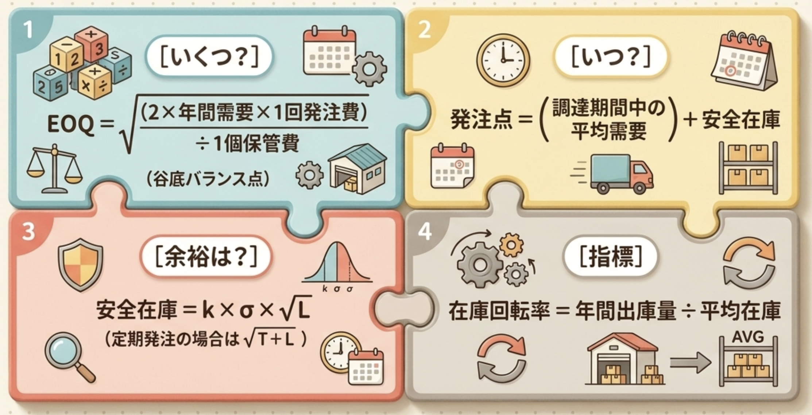

ゼロから
入門
基本
EOQの仕組み
基本計算
基本②指標
詳細
公式①
公式②指標
公式穴埋
在庫関連
在庫公式穴
穴埋初級
穴埋中級
穴埋上級
事例
クイズ
実例
図解
なぜこの式
在庫管理の3つの問い
在庫管理は突き詰めると「いつ・いくつ・どれだけ余裕を持つか」 の3問だけ。
問い 答えるツール 1行イメージ いくつ発注？ EOQ（経済的発注量） 発注費と保管費がバランスする量 いつ発注？ 発注方式 （定量／定期／ダブルビン）「在庫が減ったら」or「決まった日に」 切らさない余裕は？ 安全在庫 需要のブレに備える保険在庫

▲ 4つの公式ひと目でわかる図（①いくつ＝EOQ（経済的発注量）／②いつ＝発注点／③余裕＝安全在庫／④指標＝在庫回転率）
EOQ（経済的発注量）＝バランス点発注費↓×保管費↑が交差
発注方式＝3兄弟定量・定期・ダブルビン
安全在庫＝保険需要のブレ吸収
👨🏫
先生からひとこと
在庫って「持ちすぎたら倉庫代がかかる 」「少なすぎたら欠品で売り逃す 」のジレンマ、わかるよね。だから「ちょうどいい量＝EOQ（経済的発注量）」「ちょうどいいタイミング＝発注方式」「ちょっとの余裕＝安全在庫」の3点で対処する、これだけ覚えとけばOK！
なぜこの補強が必要か（直近5年で9問）
直近5年で在庫管理は9問 出題。元ノート「04.需要予測と線形計画法」は需要予測とLPが主軸で在庫管理は薄いため、本補強で重点カバー。
R07-32 R06-15 R05-11 R05追-7 R05追-8 R05追-15 R04-10 R04-12 R03-12
📝 【1次】試験ポイント ：毎年1〜2問は必ず出る安定論点。EOQ（経済的発注量）の公式・発注方式の使い分け・在庫評価3法だけでも8割確保できる。
🎯 在庫の3問を一目で（icon-deck）
🛡️ 余裕は？
安全在庫＝保険＝安全係数×需要のばらつき×√調達期間
📈 EOQ（経済的発注量）のイメージ図（保管費↑×発注費↓のU字バランス）
📦 在庫には「5つの種類」がある（ざっくり一覧）
「在庫」は持つ理由で5つに分かれる。試験では用語の定義違いを問われる。詳しい図解は基本タブ⑤／図解タブ⑤ 。
種類 一言で 身近な例 🛡️ 安全在庫 需要のブレに備える保険 +5個キープしておく 📅 見越在庫 繁忙期・値上げを先読み して積む 年末セール前の仕入れ増 📦 ロットサイズ在庫 （サイクル在庫） ＝ Q/2 まとめ買い／生産で生まれる発注直後はQ個・次の入荷直前はほぼ0個 → 平均が Q/2 100個ずつ発注 → 平均50個（発注量100 ÷ 2 ＝ 50） ✅ 有効在庫 これから売れる量 ＝ 手元＋発注中−引当 新規受注を取れる残り枠 🏭 エシェロン在庫 自拠点＋下流拠点の合計 工場＋倉庫＋店舗の総量
🌳 在庫管理の論点ツリー
📚 在庫管理の全体像
発注量 EOQ（経済的発注量）
発注費＋保管費 最小化
🃏 フラッシュカードで反芻（クリックで答え）
Q. EOQ（経済的発注量）の3文字はそれぞれ何？
A. Economic Order Quantity
⭐ 今日のこれだけ覚えて（ゼロから）
❶ EOQ（経済的発注量）＝発注費と保管費の合計が最小 になる発注量。グラフはU字
❷ 発注方式3兄弟＝定量（在庫が点まで減ったら）／定期（毎月など）／ダブルビン（箱2つ）
❸ 安全在庫は需要のばらつきが大きいほど多く必要 。サービス率を高めるほど多く必要
📝 ゼロから穴埋め
🔍 このタブの穴埋めを全て表示
🔄 リセット
Q1. EOQ（経済的発注量） は 経済的発注量 の略で、発注費 と保管費の合計が最小となる発注量。
Q2. 発注方式の3兄弟は 定量 ・定期・ダブルビン 。
Q3. 安全在庫 は需要のブレに備える保険在庫。
👁 答えを見る
EOQ（Economic Order Quantity：経済的発注量）の正体
🔁 元ノートでは未深掘り 。本補強で公式・グラフ・出題パターンを整理。
▲ このタブで扱う公式の全体像（①EOQ（経済的発注量）／②発注点／③安全在庫／④在庫回転率）
EOQ（Economic Order Quantity：経済的発注量）ざっくり：1回の発注で何個頼むのが一番安いか は、発注費（1回いくら）と保管費（1個いくら）の合計が最小 になる発注量。
経済的発注量 ＝ √( 2 × 年間需要量 × 1回の発注費 ÷ 1個1年の保管費 )
※試験用記号：D＝年間需要量（1年間に売れる「個数」。金額ではない）／S＝1回の発注費／H＝1個1年の保管費。記号で書くと √(2DS/H)
「需要×発注費を2倍して、保管費で割って√ 」＝経済的発注量
💡
公式のイメージ
1回大量に頼めば発注費は減る けど倉庫代が増える 。少しずつ頼めばその逆。この2つの線が交わる「U字の谷底」が EOQ（経済的発注量）。R05-11 で「EOQ（経済的発注量）では発注費＝保管費 になる」が正肢で問われた。
📈 グラフで確認：保管費↗×発注費↘＝総費用のU字
3つの発注方式（直近5年の主役）
🔁 R03-12 / R04-10 / R07-32 で連続出題 。違いを表で押さえる。
方式 タイミング 発注量 向く品目 定量発注方式 在庫が発注点 まで減ったら 毎回同じ量（EOQ） 需要が安定／単価安／中位品（B群） 定期発注方式 決まった周期 （毎週・毎月）毎回違う量（需要予測ベース） 需要変動大／高額品（A群） ダブルビン方式 1つ目の箱が空になった時 箱1個ぶん（固定） 低額・大量・C群（ボルト等）
📝 【1次】試験ポイント ：R03-12 ダブルビン＝定量発注方式の簡易版 。R04-10 安全在庫が必要なのは定量・定期どちらも 。
🤔 「発注点」と「安全在庫」の式、なぜそうなる？（初心者向けに1つずつ分解）
🔁 詳細タブに公式だけ載せた箇所を、ここでは「公式 → なぜその形か 」の順に、1つの式ずつかみ砕いて説明。
▲ 以下で②発注点・③安全在庫をひとつずつ分解して説明します
【公式①】発注点の式
発注点 ＝ 調達期間中の平均需要 ＋ 安全在庫
※調達期間（リードタイム）＝発注してから届くまでの日数
💡
なぜ「平均需要＋安全在庫」になるの？
定量発注方式では「在庫がここまで減ったら発注ボタンを押す」ラインを決めておく。これが発注点 。発注しても品物はすぐ届かない 」こと。発注してから届くまで 調達期間 がかかる。その間も商品は売れ続けるので、発注点は「届くまでに売れちゃう分 」を見越した位置に置く必要がある。調達期間中の平均需要 」＝届くまでにいつも通り 売れる分。これだけだと「予想ちょうど」で在庫ゼロ着地 → ちょっと多く売れたら欠品。安全在庫 」＝「いつもより売れちゃった 」に備える保険の上乗せ。
🧭
「発注点」はどの発注方式の話？（重要：方式の対応）
発注点が出てくるのは「定量発注方式」 。在庫が発注点まで減ったらEOQ（経済的発注量）を発注する仕組みだから。定量発注方式 ：発注点を使う（◯）。だから上の式はこの方式の話。ダブルビン方式 ：定量発注方式の簡易版 。「2つ目の箱が空になった＝発注点に到達」と読み替えると同じ理屈（◯、ただし金額計算はせず箱で代用）。定期発注方式 ：発注点は使わない （×）。決まった周期（毎週・毎月）で発注し、毎回「（発注間隔＋調達期間）中の予測需要＋安全在庫−在庫−発注残」で量を決める。「次にいつ発注するか」が日付で決まっているので“点”が要らない。
方式 発注点を使う？ 安全在庫は必要？ 定量発注方式 使う （在庫が点に到達で発注）必要 ダブルビン方式 実質使う（箱が空＝点に到達） 必要（2つ目の箱が代わり） 定期発注方式 使わない （周期で発注）必要
📝 【1次】試験ポイント ：R04-10 安全在庫は定量・定期どちらにも必要 （ここがよく問われる）。一方発注点は定量（＋簡易版のダブルビン）だけ 。「定期発注方式に発注点を設定する」は誤り 。
【公式②】安全在庫の式
安全在庫 ＝ 安全係数(k) × 需要のばらつき(σ) × √調達期間(√L)
※k＝サービス率を確率の値にしたもの（90%→1.28／95%→1.65／99%→2.33）／σ＝1日あたり需要の標準偏差／L＝調達期間（日数）
💡
なぜ「3つのかけ算」になるの？
安全在庫＝「調達期間中に、予想よりどれだけ多く売れうるか 」への備え。それを決める要素は次の3つで、どれも大きいほど安全在庫が増えるのでかけ算 になる。σ（需要のばらつき） ＝1日の売上が日によってどれだけブレるか。ブレが大きい商品ほど「予想外」も大きい。k（安全係数） ＝「どれくらいの確率で欠品させたくないか（サービス率）」を倍率に直したもの。絶対切らしたくない（99%）なら大きめ＝2.33、まあまあでいい（90%）なら小さめ＝1.28。√L（調達期間のルート） ＝届くまでの日数。長いほどブレが積み重なる時間も長い。ただし「日数そのまま」ではなく「ルート（平方根） 」← 理由は次のカード。
🪙
なぜ「調達期間 L」じゃなく「√L」なの？（最大の引っかけ）
毎日のブレは、ある日プラス・ある日マイナスと向きがバラバラで“打ち消し合う ”。だから10日分のブレは「1日のブレ × 10」ほど大きくならない。独立したブレを n 日分足すと、合計のブレ幅は n 倍ではなく √n 倍 」（標準偏差の合成）。だから調達期間 L 日分なら √L 倍 。試験での使いどころ ：「調達期間が4倍 → 安全在庫も4倍」は誤り 。√4＝2 なので2倍にしかならない 。頻出の引っかけ。
発注点＝「届くまでに売れる分＋保険 」／安全在庫＝「安心度(k) × ブレ幅(σ) × ルート日数(√L) 」√なので日数4倍でやっと2倍
発注点の「中身」をグラフで分解する
在庫量
時間
安全在庫
発注点
📦 発注！
📦 発注！
調達期間 L
安全在庫
k×σ×√L
調達期間中の
平均需要
L×μ（日数×1日平均）
発注点＝①＋②
● 実線（青）＝在庫推移
● 破線（青）＝調達期間中（届くのを待つ間）
発注点の中身を縦に分解 ：在庫が🔴発注点まで減った瞬間に発注しても、商品が届くまでに「🔴→安全在庫ライン」まで売れ続ける。
この高さが 調達期間中の平均需要（Lμ） 。その下にある🟢安全在庫は「いつもより多く売れた時の保険」。
だから 発注点 ＝ Lμ ＋ 安全在庫 。
安全在庫の式が違う理由：カバーする期間が違う
定量発注方式
発注点到達
調達期間 L
補充
カバレッジ期間＝L
安全在庫 ＝ k × σ ×
√L
定期発注方式
発注日
次の発注日
発注間隔 T
調達期間 L
補充
カバレッジ期間＝T＋L
安全在庫 ＝ k × σ ×
√(T＋L)
式が違う理由はカバレッジ期間の違い ：定量発注は「発注してから届くまでの 調達期間 L 」だけカバーすればよい（次の発注タイミングは在庫量で自動決まり）。
定期発注は「次の発注日が T 日後に固定 」なので、その間に大きく需要が振れてもしのがなければならず、カバレッジ期間が T＋L と長くなる。
同じ σ・k でも √(T+L) ＞ √L なので定期発注の安全在庫は多めになる。
在庫評価3法（R05追-7）
方法 払出単価 インフレ時の利益 先入先出法（FIFO） 古い受入から払出 高く出る 後入先出法（LIFO）※税法廃止 新しい受入から払出 低く出る 移動平均法 受入の都度、平均単価更新 中間
📐 経済的発注量の公式の中身を分解
🎵 入門タブ語呂
「需要×発注費を2倍して、保管費で割って√ 」＝経済的発注量の覚え方
「テイテイダブ 」定量・定期・ダブルビン
🃏 フラッシュカードで反芻（クリックで答え）
A. √(2 × 年間需要 × 1回発注費 ÷ 1個保管費)
Q. 経済的発注量の点で、発注費と保管費の関係は？
A. 年間の発注費＝年間の保管費 （ぴったり等しい）
A. 発注点まで在庫が減ったら
⭐ 今日のこれだけ覚えて（入門）
❶ 経済的発注量 ＝ √(2 × 年間需要 × 1回発注費 ÷ 1個保管費) 。この量で年間発注費＝年間保管費 になる
❷ 定量＝在庫が点まで減ったら同量を発注／定期＝決まった日に都度量を発注／ダブルビン＝箱2つで簡易管理
❸ 在庫評価：FIFO＝古いから／LIFO＝新しいから／移動平均＝都度平均
📝 入門穴埋め
🔍 このタブの穴埋めを全て表示
🔄 リセット
Q1. 経済的発注量 ＝ √(2 × 年間需要 × 1回発注費 ÷ 1個保管費)。
Q2. 経済的発注量の点では年間 発注費 ＝ 年間 保管費 。
Q3. 在庫が 発注点 まで減ったら一定量発注するのが定量発注方式。
Q4. 定期発注方式は 高額品 ・需要変動の大きい品に向く。
Q5. ダブルビン方式は 定量発注 方式の簡易版。
👁 答えを見る
📋 3つの発注方式と使う計算・公式 一覧
発注方式
仕組み
発注量の決め方／公式
発注タイミング
適した品目
定量発注方式（発注点方式）
在庫が発注点 まで減ったら毎回一定量 を発注
発注量 ＝ EOQ 発注点 到達時（不定期）需要が安定／B・C品目
定期発注方式
一定間隔 で在庫を見て、その都度必要量 を発注発注量 ＝（発注間隔＋LT）×平均需要 ＋ 安全在庫 − 現在在庫 − 発注残 一定間隔 （毎週金曜など）需要変動が大／A品目
ダブルビン方式（2棚法・補充点方式）
2つの箱で運用、片方が空になったら1箱分 発注
発注量 ＝ 1箱分（固定） 1箱が空になった時
C品目／消耗品
共通で使う計算
安全在庫 ＝ 安全係数 × √LT × 需要の標準偏差
／発注点 ＝ 平均需要×LT ＋ 安全在庫／在庫回転率 ＝ 年間売上高 ÷ 平均在庫高
発注方式 仕組み 発注量の決め方／公式 発注タイミング 適した品目
定量発注方式（発注点方式）
在庫が発注点 まで減ったら毎回一定量 を発注
発注量 ＝ EOQ
発注点 到達時（不定期）需要が安定／B・C品目
定期発注方式
一定間隔 で在庫を見て、その都度必要量 を発注発注量 ＝（発注間隔＋LT）×平均需要 ＋ 安全在庫 − 現在在庫 − 発注残
一定間隔 （毎週金曜など）需要変動が大／A品目
ダブルビン方式（2棚法・補充点方式）
2つの箱 で運用、片方が空になったら1箱分 発注発注量 ＝ 1箱分（固定）
1箱が空になった時 C品目／消耗品
① EOQ（経済的発注量）の感応度（R05-11、R05追-8）
🔁 R05-11 ではEOQ（経済的発注量）の性質、R05追-8 では総費用式が直球 で問われた。
年間の総費用 ＝ （年間需要 ÷ 発注量）× 1回発注費 ＋ （発注量 ÷ 2）× 1個保管費 第1項＝年間の発注費（年に何回頼むか × 1回の手間賃）／第2項＝年間の保管費（平均在庫 × 単価）
発注量に「経済的発注量＝√(2×年間需要×1回発注費÷1個保管費)」を入れると、最小総費用 ＝ √(2×年間需要×1回発注費×1個保管費) になる。
📝 【1次】試験ポイント ：R05-11 ①年間需要が2倍 になると経済的発注量は√2倍（約1.4倍） （4倍ではない）。②1回発注費が2倍 で経済的発注量は√2倍。③1個保管費が2倍 で経済的発注量は1/√2倍（約0.7倍） 。
⚠️ 【1次】引っかけ ：「需要が2倍になれば経済的発注量も2倍」は誤り （√2倍が正）。「保管費が増えれば経済的発注量も増える」は誤り （保管費増は逆に経済的発注量を減らす）。
🎯 判定基準 ：分母（保管費）が大きいほど経済的発注量は減る 、分子（需要・発注費）が大きいほど増える 。√で効く ので、4倍でやっと2倍になる。
📈 感応度を視覚で：D・S・H が動くと U字の谷底はどこへ？
📌 谷底＝Q* がどう動くかをイメージ：D↑・S↑なら谷底が右へずれる （Q*増）／H↑なら谷底が左へずれる （Q*減）。いずれも√で効く ので変化は緩やか。
EOQ（経済的発注量）の前提条件（盲点）
前提 内容 崩れたら？ 需要は一定 年間需要が確定で平準 動的計画法など別手法 調達期間は一定 リードタイム不変 安全在庫で吸収 欠品は許さない 常に在庫あり前提 欠品コスト導入 数量割引なし 単価一定 割引点比較が必要
📝 【1次】試験ポイント ：R05-11 「EOQ（経済的発注量）は需要・リードタイム一定が前提」が頻出正肢。
② 発注点・安全在庫（R04-10、R07-32）
🔁 定量発注方式の中核 。安全在庫は両方の方式で必要。
発注点 ＝ 調達期間中の平均需要 ＋ 安全在庫 安全係数 × 需要のばらつき × √調達期間 ※安全係数＝「在庫切れさせたくない度合い（サービス率）」を確率の値に直したもの／需要のばらつき＝標準偏差／調達期間＝発注してから届くまでの日数。記号で書くと k×σ×√L
サービス率（在庫切れさせない確率）と安全係数の対応：
サービス率 安全係数 90% 約1.28 95% 約1.65 99% 約2.33
📝 【1次】試験ポイント ：R07-32 安全在庫は需要のばらつきが大きいほど 多く必要、調達期間が長いほど 多く必要、サービス率を高めるほど 多く必要（安全係数が大きくなる）。R04-10 累積入荷量グラフの読解。
⚠️ 【1次】引っかけ ：「サービス率を上げると安全在庫は減る」は誤り （正：増える）。「安全在庫は調達期間に比例して増える」は誤り （√（調達期間）に比例 するので、4倍でやっと2倍）。
③ 定期発注方式の発注量（R07-32）
発注量 = （発注間隔＋調達期間）中の予測需要 ＋ 安全在庫 − 現在の在庫 − まだ届いていない発注分
📝 【1次】試験ポイント ：R07-32 「現在庫」と「発注残（既発注未着）」を引くのを忘れる引っかけ。
④ 在庫管理用語（R04-12）
用語 定義 意味 顧客サービス率 欠品なく出荷できた割合 = 満たせた注文 ÷ 注文総数 高いほど顧客満足／在庫負担増 在庫回転率 年間出庫量 ÷ 平均在庫 （回/年）高いほど在庫効率良い 在庫日数 365 ÷ 在庫回転率 低いほど良い 在庫引当 受注ぶんを在庫から確保する処理 欠品防止のため事前に引当
📝 【1次】試験ポイント ：R04-12 「在庫回転率」と「サービス率」の定義入れ替えの引っかけ。回転率は出庫÷在庫 、サービス率は出荷÷注文 。
⑤ 在庫の5つの種類（持つ理由による分類）
🔁 1次試験で出題される在庫タイプの分類 。「なぜその在庫を持つのか」で5つに分けられる。
在庫の5つの種類（持つ理由で分類）
🛡️
① 安全在庫
需要のブレ・調達遅れに備える「保険」の在庫
例：いつもの売上は20個だが、ブレに備えて+5個キープ → 安全在庫＝5個
←保険の余裕→
📅
② 見越在庫（みこしざいこ）
将来の需要増・値上げ・繁忙期を「見越して」前もって積み上げる在庫
例：年末セール前に多めに仕入れる／工場休止前の作り溜め／値上げ前の駆け込み購入
繁忙期に向け積み増し
📦
③ ロットサイズ在庫（サイクル在庫） ＝ Q/2
「まとめて発注／生産」で生まれる在庫。発注直後はQ個・次の入荷直前はほぼ0個 → 平均がQ/2
例：100個ずつ発注（Q=100）→ 発注直後100個・直前0個 → 平均50個（記号：Q/2）
ノコギリ波の平均
✅
④ 有効在庫（使える在庫の総量）
＝ 現在の在庫 ＋ まだ届いていない発注分 − 受注済みの引当分
例：手元100個＋発注中50個−予約済60個＝有効在庫90個。新規受注を取れる量
手元
＋
発注中
−
引当
🏭
⑤ エシェロン在庫（多段階在庫の合計）
サプライチェーンで「ある拠点 ＋ それより下流（顧客側）の拠点」の在庫を全部合計したもの
例：工場のエシェロン在庫＝工場在庫＋倉庫在庫＋店舗在庫の合計。チェーン全体の在庫量を見る指標
工場
倉庫
店舗
覚え方 ：①🛡️保険＝安全在庫 ／②📅先読み＝見越在庫 ／③📦まとめ買い＝ロットサイズ在庫（サイクル在庫）＝Q/2 （発注直後Q個・直前0個 → 平均Q/2）／④✅使える総量＝有効在庫 （手元＋発注中−引当）／⑤🏭川下まで合算＝エシェロン在庫 。引っかけ注意 ：有効在庫 は「現物の在庫」ではなく「これから売れる量 」。受注予約を引いた後の数字。
📝 【1次】試験ポイント ：用語の定義違いを問う問題が出る。特に 「有効在庫＝手元＋発注中−引当」 の式と、「エシェロン在庫＝自拠点＋下流拠点の合計」 は混同しやすい頻出ポイント。見越在庫 は「需要が予測できる季節変動・繁忙期」、安全在庫 は「予測できないブレ」と区別する。
🔁 穴埋めチェックは 穴埋初級／中級／上級タブ に分散配置（初級＝定義／中級＝混同区別／上級＝計算）。語呂は 語呂タブ 、選択クイズは クイズタブ へ。
⑥ ABC分析（R06-15）
🔁 パレート分析の在庫版 。原材料の管理レベル設計に直結。
区分 金額シェア 品目数シェア 管理方式 A群 約70〜80% 約10〜20% 定期発注（厳密管理） B群 約15〜20% 約20〜30% 定量発注 C群 約5〜10% 約50〜70% ダブルビン（簡易）
📝 【1次】試験ポイント ：R06-15 原材料の突発故障対応に重要なA群 は定期発注 で需要変動を都度反映。C群はダブルビン等の簡易管理でコスト削減。
⚠️ 【1次】引っかけ ：「A群は品目数が多い」は誤り （少ない）。「C群は厳密管理」は誤り （簡易）。
⑦ 動的発注計画（R05追-15）
🔁 需要が期ごとに異なる場合 のロットサイジング。EOQ（経済的発注量）前提（一定需要）が崩れた時の手法。
手法 方針 L4L（Lot for Lot） 需要量＝発注量。在庫ゼロ運用 POQ（Period Order Quantity） EOQ（経済的発注量）相当の周期にまとめて発注 Wagner-Whitin法 動的計画法で最適解 を求める（試験では概念のみ） Silver-Meal法 期当たり費用を最小化するヒューリスティック
📝 【1次】試験ポイント ：R05追-15 動的計画は「期首在庫＋発注量−需要量＝期末在庫」の漸化式で総費用最小化。表埋め問題が出た。
⑧ 在庫評価（R05追-7）詳細
💡 計算例（インフレ局面）
期首在庫：100個@100円 受入①50個@120円 受入②50個@140円 払出80個
FIFO（先入先出）：80個=100円× 80個 → 払出原価 8,000円
LIFO（後入先出）：80個=140円×50＋120円×30 → 払出原価 10,600円
移動平均：(100×100+50×120+50×140)÷200=115円 → 払出 80×115=9,200円
インフレ時の払出原価：FIFO < 移動平均 < LIFO → 利益はその逆順
📝 【1次】試験ポイント ：R05追-7 計算式と払出原価の比較が頻出。「先入先出は古い単価で払出＝期末在庫は新しい単価」 。
👨🏫
先生からひとこと
在庫管理は数式が多く見えるけど、覚える式はEOQ（経済的発注量）・総費用・発注点・安全在庫・回転率の5本 だけ。あとは使い分け表 と引っかけパターン 。電卓使えば点になる分野だから、絶対落とせない よ！
🔢 安全在庫の3要因（factor-grid）
1 σ（ばらつき）
需要の標準偏差が大きいほど安全在庫↑
📊 ABC分析の管理方式対比（gap-chart）
📦 金額シェア vs 品目数シェア
🎵 基本タブ語呂
「係数×ばらつき×√期間 」安全在庫＝安全係数×需要のばらつき×√調達期間
「A定期・B定量・Cダブル 」ABC×発注方式
サービス率「9割イチニッパ・95イチロクゴ・99ニッサンサン 」安全係数=1.28／1.65／2.33
🃏 フラッシュカードで反芻（クリックで答え）
A. 2倍 （√4倍）。√で効くので4倍でやっと2倍
A. 安全係数 × 需要のばらつき × √調達期間
A. （発注間隔＋調達期間）中の予測需要＋安全在庫－現在の在庫－まだ届いていない発注分
⭐ 今日のこれだけ覚えて（基本）
❶ 経済的発注量の感応度：年間需要・1回発注費が増えると経済的発注量は √倍で増える ／1個保管費が増えると 1/√倍で減る
❷ 安全在庫＝安全係数×需要のばらつき×√調達期間 。サービス率↑・ばらつき↑・調達期間↑で安全在庫↑
❸ ABC分析：A＝定期（厳密）／B＝定量／C＝ダブルビン（簡易）
📝 基本タブ穴埋め
🔍 このタブの穴埋めを全て表示
🔄 リセット
Q1. 年間の総費用 = （年間需要 ÷ 発注量）× 1回発注費 ＋ （発注量 ÷ 2 ）× 1個保管費。第2項は平均在庫×保管費単価。
Q2. 年間需要が4倍になると 経済的発注量 は 2 倍。
Q3. 安全在庫 = 安全係数 × 需要のばらつき × √調達期間 。
Q4. サービス率 95% に対応する安全係数は約 1.65 。
Q5. 在庫回転率 = 年間出庫量 ÷ 平均在庫。
Q6. ABC分析でA群の管理方式は 定期発注 、C群は ダブルビン 。
Q7. 定期発注の発注量 = （発注間隔＋調達期間）中の予測需要 ＋ 安全在庫 − 現在の在庫 − まだ届いていない発注分 。
Q8. インフレ時、払出原価が最大になるのは 後入先出（LIFO） 法。
👁 答えを見る
発注方式 仕組み 発注量の決め方／公式 発注タイミング 適した品目
定量発注方式（発注点方式）
在庫が発注点まで減ったら毎回一定量を発注
発注量 ＝ EOQ 2DS／H )1回発注費 H:1個保管費
発注点到達時（不定期）
需要が安定 ／B・C品目
定期発注方式
一定間隔で在庫を見て必要量を発注
発注量 ＝（発注間隔＋LT ）×平均需要 ＋ 安全在庫 − 現在在庫 − 発注残
一定間隔（毎週金曜など）
需要変動が大 ／A品目
ダブルビン方式（2棚法・補充点方式）
2つの箱で運用、片方が空になったら1箱分発注
発注量 ＝ 1箱分（固定） なし ／目視管理
1箱が空になった時
C品目 ／消耗品極めて低い
📦 登場する言葉と記号
D（Demand） ：1年間に必要な量（年間需要量）S（Setup cost） ：1回あたりの注文費用（発注費）H（Holding cost） ：1個あたりの年間保管費用（保管単位費用）Q（Quantity） ：1回あたりの発注量TC（Total Cost） ：年間の総費用
① 年間の発注費の分解
「1年間に何回注文するか」×「1回あたりの費用」で求める。
年間の発注費 ＝ 1回あたりの注文費用 × （ 1年間に必要な量 ÷ 1回あたりの発注量 ）
記号：S × ( D ÷ Q ) ＝ S・D / Q
🔑 1回あたりの発注量 Q が大きいほど注文回数が減り、年間の発注費は下がる 。
② 年間の保管費の分解
「平均在庫量（= 1回あたりの発注量 ÷ 2）」×「1個あたりの年間保管費用」で求める。
年間の保管費 ＝ 1個あたりの年間保管費用 × （ 1回あたりの発注量 ÷ 2 ）
記号：H × ( Q ÷ 2 ) ＝ H・Q / 2
🔑 1回あたりの発注量 Q が大きいほど平均在庫が増え、年間の保管費は上がる 。
③ 年間の総費用の合体
①と②を合わせると：
TC ＝
{ S × ( D ÷ Q ) } ＋ { H × ( Q ÷ 2 ) }
発注費と保管費はトレードオフ。Qが増えると発注費↓・保管費↑
ここで、1回あたりの発注量 Q に「EOQ（経済的発注量） 」を代入して、最小費用を導きます。
EOQ（経済的発注量） ＝ √( 2 × D × S ÷ H )
√( 2 × 1年間に必要な量 × 1回あたりの注文費用 ÷ 1個あたりの年間保管費用 )
④ 最小コスト時の「年間の発注費」計算過程
S × { D ÷ √(2DS/H) } を整理する
【ステップ1】割り算を逆転させる
【ステップ2】外にある S と D をルートの中に入れる（2乗にする）
【ステップ3】上と下の S・D を1つずつ消す（約分）√( D × S × H ÷ 2 )
最小時の年間の発注費 ＝ √( DSH / 2 )
⑤ 最小コスト時の「年間の保管費」計算過程
H × { √(2DS/H) ÷ 2 } を整理する
【ステップ1】外の H と分母の 2 をルートの中に入れる（2乗にする）
【ステップ2】ルートの中の H を1つ消し、分母を 4 にする
【ステップ3】2 と 4 を約分して半分にする√( DSH / 2 )
最小時の年間の保管費 ＝ √( DSH / 2 )
💡
ポイント
発注費と保管費がまったく同じ式になりました。
⑥ 最小の総費用（最後に足す）
TC_min ＝ √(DSH/2) ＋ √(DSH/2) を整理する
【ステップ1】まったく同じ式を2つ足す
【ステップ2】外の 2 をルートの中に入れる（4にする）
【ステップ3】4 ÷ 2 ＝ 2 に計算する√( 2 × D × S × H )
最小の総費用 ＝ √( 2 × 年間需要 × 1回発注費 × 1個年間保管費 )
🏁 結論：全行程まとめ
① 年間の発注費 ＝ S × D / Q （Q が大きいほど↓）② 年間の保管費 ＝ H × Q / 2 （Q が大きいほど↑）③ 総費用 TC ＝ SD/Q ＋ HQ/2 （トレードオフ）④ EOQ（経済的発注量） ＝ √(2DS/H) を代入すると……⑤ 最小の総費用 TC_min ＝ √( 2 × D × S × H )
TC_min ＝ √( 2 × 年間需要 × 1回発注費 × 1個年間保管費 )
記号：TC_min ＝ √(2DSH) ── これが最小総費用の最終形
📝 【1次】試験ポイント ：EOQ（経済的発注量）代入後の最小総費用 √(2DSH) は稀に出題。「発注費＝保管費になるQが経済的発注量」という均衡の原理を押さえておく。
⚠️ 【1次】引っかけ ：「EOQ（経済的発注量）では総費用がゼロに近づく」は誤り （費用はゼロにならず、発注費と保管費が均衡する点が最小）。
📌 記号は基本つかいません（使うときは「日本語名称（記号）」と書きます）。各問の「答え：」をタップすると答え＋計算式が出ます。個数 のこと（金額ではありません）。「○○中の予測需要」も同様に個数です。
🔍 すべて表示
🔄 リセット
各問とも 〔問題〕→〔使う公式（穴埋め）〕→〔答え〕の順。公式の空欄も「答え：」の空欄も、タップで表示できます。
🟦 共通の式
問1〔サイクル在庫を求める〕 1回に200個ずつ発注しています。サイクル在庫（ロットサイズ在庫）は何個？発注量 2 100個（200 ÷ 2 ＝ 100）
問2〔安全在庫を求める〕 1日の需要のばらつき（標準偏差）が10個、調達期間が9日、品切れさせない確率95％（安全係数1.65）。安全在庫は何個？安全係数 × 需要のばらつき × √対象期間（ここでは調達期間） 約50個（1.65 × 10 × √9 ＝ 1.65 × 10 × 3 ＝ 49.5）
問3〔平均在庫を求める〕 発注量200個、安全在庫50個のとき、平均在庫は何個？サイクル在庫 ＋ 安全在庫 ＝ 発注量 2 150個（200 ÷ 2 ＋ 50 ＝ 100 ＋ 50）
問4〔安全係数を求める〕 品切れさせない確率を99％にしたい。対応する安全係数はおよそいくつ？約2.33 （90％→1.28／95％→1.65）約2.33
🟩 定量発注方式の式
問5〔経済的発注量（EOQ）を求める〕 年間需要量1,000個、1回の発注費400円、1個1年の保管費5円。経済的発注量は何個？( 2 × 年間需要量 × 1回の発注費 1個1年の保管費 ) 400個（√(2 × 1000 × 400 ÷ 5) ＝ √160000 ＝ 400）
問6〔1個1年の保管費を求める〕 在庫品の単価が250円、在庫費用率が年20％。1個1年の保管費はいくら？在庫品の単価 × 在庫費用率 1年間の保有コスト合計 在庫品の価値 50円（250 × 0.2 ＝ 50）
問7〔年間の発注費を求める〕 年間需要1,200個、1回に300個ずつ発注、1回の発注費500円。年間の発注費はいくら？年間需要 発注量 1回の発注費 2,000円（(1200 ÷ 300) × 500 ＝ 4 × 500）
問8〔年間の維持費を求める〕 1回に300個発注、1個1年の保管費が8円。年間の維持費はいくら？発注量 2 1個1年の保管費 （発注量÷2 ＝ 平均在庫）1,200円（(300 ÷ 2) × 8 ＝ 150 × 8）
問9〔年間の総費用を求める〕 年間の発注費が2,000円、年間の維持費が1,800円。年間の総費用はいくら？ また、これは最小になっている？年間の発注費 ＋ 年間の維持費 （最小のときは 発注費 ＝ 維持費 ）3,800円（2,000 ＋ 1,800）。発注費≠維持費なので、まだ最小ではない
問10〔発注点を求める〕 1日に20個売れ、届くまで4日かかり、安全在庫は15個。発注点は何個（在庫が何個まで減ったら発注）？調達期間中の平均需要 ＋ 安全在庫 （調達期間中の平均需要 ＝ 1日の需要 × 調達期間）95個（20 × 4 ＋ 15 ＝ 80 ＋ 15）
問11〔EOQ（経済的発注量）感応度〕 年間需要量が4倍になったとき、経済的発注量は何倍になる？√（平方根） 」に比例 → 需要が4倍 → EOQ（経済的発注量） は √4 ＝ 2 倍2倍（4倍でも√をとるので2倍にしかならない）
🟨 定期発注方式の式
問12〔定期発注の発注量を求める〕 発注間隔7日＋調達期間3日＝10日。その10日間の予測需要は1日30個×10日＝300個。安全在庫40個。いまの在庫が90個。まだ届いていない発注ぶんが20個ある。今回いくつ発注する？（発注間隔＋調達期間）中の予測需要 ＋ 安全在庫 − 現在の在庫 − まだ届いていない発注分 230個（300 ＋ 40 − 90 − 20）
問13〔定期発注の安全在庫を求める〕 需要のばらつき5個／日、発注間隔＋調達期間＝16日、安全係数1.65（95％）。安全在庫は何個？安全係数 × 需要のばらつき × √（発注間隔＋調達期間） 33個（1.65 × 5 × √16 ＝ 1.65 × 5 × 4）
🟧 ダブルビン方式の式
問14〔1つの箱に入れる量を求める〕 1日に5個使う部品で、届くまで6日かかり、安全在庫を10個みる。1つの箱には何個入れておけばよい？調達期間中の平均需要 ＋ 安全在庫 （＝定量発注の「発注点」と同じ考え方）40個（5 × 6 ＋ 10 ＝ 30 ＋ 10）。この箱が空になったら次の箱へ。
👁 答えを見る
📌 EOQ（経済的発注量）・発注方式・在庫評価3法は前のタブで説明済み。ここでは残りの式（在庫の量の数え方・回り具合・サービス率・コストの内訳） を公式ごとに。式の一覧だけ見たいときは「公式①／公式②指標」タブへ。
① サイクル在庫（ロットサイズ在庫） ＝ 発注量 ÷ 2
サイクル在庫 ＝ 発注量（ロットサイズ）Q 2
「まとめ買い・まとめ生産」で生まれる在庫。届いた直後は Q 個まるごとある／次が届く直前はほぼ 0 個 。ということは、その期間を平均すると 真ん中の Q/2 個 くらい持っていることになる。これがサイクル在庫。
② 平均在庫 ＝ サイクル在庫 ＋ 安全在庫
平均在庫 ＝ 発注量 Q 2
ふつうに回している分（サイクル在庫＝Q/2）に、念のための保険（安全在庫）を底上げ分として足したもの。「いつもだいたい何個 倉庫にあるか」の平均値 。次の「在庫回転率」の分母になる大事な数。
📦
在庫の“種類”ことばの整理（混同注意）
・サイクル在庫（ロットサイズ在庫） ＝まとめ買いで出る分（Q/2）安全在庫 ＝予測できないブレへの保険（k×σ×√対象期間）見越在庫 ＝予測できる繁忙期・値上げに備えて前もって 積む分（季節品など）
③ 在庫回転率 ＝ 年間の出庫量 ÷ 平均在庫
在庫回転率 ＝ 年間の出庫量（または売上原価） 平均在庫
1年で在庫が“何回 入れ替わったか” 。たとえば年間1200個さばいて、平均在庫が100個なら 1200÷100＝12回転 （＝月1回ペースで丸ごと入れ替わった）。大きい＝良い ：少ない在庫でたくさんさばけている（倉庫代も資金も節約）。小さい＝注意 ：在庫を寝かせすぎ。死蔵在庫・陳腐化のリスク。
④ 在庫日数（在庫回転日数） ＝ 365 ÷ 在庫回転率
在庫日数 ＝ 365 在庫回転率
回転率を「日数」に言い換えただけ。「いまの在庫だけで、あと何日 売り続けられるか」 。12回転なら 365÷12 ≒ 30日分 持っている、ということ。回転率が大きいほど在庫日数は短い（＝身軽）。
⑤ 顧客サービス率 ＝ 満たせた注文数 ÷ 注文総数
顧客サービス率 ＝ 満たせた注文数 注文総数
「来た注文のうち、欠品せずに応えられた割合」 （フィルレート）。100件の注文で95件を在庫から出せたら 95%。安全係数 k が大きくなる （95%→1.65／99%→2.33）。「サービス率と安全在庫はセット」と覚える。
⑥ 有効在庫 ＝ 現在の在庫 ＋ まだ届いていない発注分 − 受注済みの引当分
有効在庫 ＝ 現在の在庫 ＋ まだ届いていない発注分 − 受注済みの引当分
これは「倉庫にある現物の数」ではなく、「これから自由に売れる量」 。この有効在庫 で判断する。引っかけ：「有効在庫＝現物の在庫」は誤り。
⑦ エシェロン在庫 ＝ その拠点の在庫 ＋ それより下流（顧客側）の拠点の在庫の合計
エシェロン在庫 ＝ その拠点の在庫 ＋ それより下流（顧客側）の拠点の在庫の合計
サプライチェーン（工場→倉庫→店舗…）で、ある拠点の在庫を考えるとき「その拠点＋川下ぜんぶ」を合算 した数。「ここから先のチェーン全体で、いま何個 抱えているか」 を見て、二重発注（あちこちで余分に持つ）を防ぐ考え方。引っかけ：上流（仕入れ側）は含めない、含めるのは下流。
⑧ 1個1年の保管費（H） ＝ 在庫品の単価 × 在庫費用率（年率）
1個1年の保管費 H ＝ 在庫品の単価 c × 在庫費用率 i（年率）
EOQ（経済的発注量） の式に出てくる「H（1個を1年しまっておく費用）」は、たいてい問題文で「単価○円・在庫費用率○%」 の形で与えられて、掛け算で作る。「高い品物・長く置く品物」ほど H が大きく、EOQ（経済的発注量）＝√(2DS/H) は小さめになる。
「在庫費用率 i」って何の割合？ ── 分母・分子に分けると：
在庫費用率 i ＝ 1年間の在庫保有コスト（合計） 在庫品の価値（取得原価）
つまり「在庫を1年持つのに、その品物の値段の何％がコストとして消えるか」。分子（1年間の保有コスト）はさらに4つくらいに分かれます：
分子のなかみ（年間保有コスト） 具体例 ① 資本コスト （金利・機会費用）在庫に化けたお金が生んだはずの利息・運用益。ふつう一番大きい ② 保管コスト （スペース費）倉庫の家賃・電気・冷蔵設備・荷役の人件費 ③ サービスコスト 在庫にかかる保険料・固定資産税 ④ リスクコスト 陳腐化（型落ち）・劣化・破損・盗難・廃棄ロス
「①金利＋②倉庫＋③保険・税＋④劣化盗難ロス」を全部足して、在庫の値段で割ったのが i 。例：単価1,000円の品で年間の保有コストが1個あたり200円なら i＝200÷1,000＝20%/年 → H＝1,000×0.2＝200円。①資本コストが最大の構成要素 になることが多い、というのが押さえどころ。
⑨ 年間の発注費 と 年間の維持費（EOQ（経済的発注量）の“2つの費用”）
年間の発注費 ＝ 年間需要 D 発注量 Q
年間の維持費 ＝ 発注量 Q 2
EOQ（経済的発注量） は「この2つの費用の合計が一番小さくなる Q」だった。年間の発注費 ＝（年に何回 注文するか）×（1回の手間賃）。1回にたくさん頼む（Q大）ほど回数が減って下がる 。年間の維持費 ＝（平均在庫 Q/2）×（1個1年の保管費）。1回にたくさん頼む（Q大）ほど在庫が増えて上がる 。年間発注費 ＝ 年間維持費 （ぴったり等しい）。
⭐ このタブのこれだけ
❶ サイクル在庫＝Q/2（最大Qと最小0の平均）／平均在庫＝Q/2＋安全在庫
❷ 在庫回転率＝年間出庫÷平均在庫（大きいほど身軽）／在庫日数＝365÷回転率
❸ 顧客サービス率＝満たせた注文÷注文総数（高くしたいほど安全係数kが大）
❹ 有効在庫＝現物＋入荷予定−出荷予約（＝これから売れる量）／エシェロン在庫＝自拠点＋下流の合計
❺ H＝単価×在庫費用率／EOQ（経済的発注量）の点では「年間発注費＝年間維持費」
経済的発注量の公式の導き方
🔁 R05追-8 で総費用最小化条件が直球 で問われた。
年間総費用 ＝ （年間需要÷発注量）×1回発注費 ＋ （発注量÷2）×1個保管費 経済的発注量 ＝ √( 2 × 年間需要 × 1回発注費 ÷ 1個保管費 ) ※記号で書くと TC = DS/Q + QH/2、dTC/dQ = 0 から Q* = √(2DS/H)
「微分＝0」を使わずに、年間の発注費＝年間の保管費 という性質から直接導くこともできる：
数量割引（応用）
条件 判定 経済的発注量が割引下限以上 そのまま経済的発注量で発注 経済的発注量が割引下限未満 「割引下限ロット」と「経済的発注量」を総費用比較 して安い方
総費用 ＝ 購入費（年間需要×単価） ＋ 発注費（年間需要÷発注量×1回発注費） ＋ 保管費（発注量÷2×1個保管費）。購入費の差 を含めて比較するのがミソ。
定量発注 vs 定期発注 vs ダブルビン 総合比較表
観点 定量発注（経済的発注量で都度発注） 定期発注 ダブルビン 発注時期 発注点到達時 固定周期 箱が空になった時 発注量 固定（＝経済的発注量） 変動（毎回計算） 固定（箱1個分） 在庫量チェック 常時必要 周期ごと 不要（目視） 需要変動への適応 低 高 低 管理コスト 中 高 低 適合品目 B群 A群（高額・変動） C群（低額）
📝 【1次・2次】試験ポイント ：【1次】R03-12 3方式の使い分け。【2次】事例IIIでは「需要変動が大きい主要部品はA群＝定期発注で需要予測を反映」「汎用ボルトはダブルビンで管理工数削減」 がド定番の改善提案。
安全在庫の応用（公式拡張）
条件 安全在庫の式 需要のみ変動 安全係数 × 需要のばらつき × √調達期間 調達期間も変動 安全係数 × √( 調達期間×需要のばらつき² ＋ 平均需要²×調達期間のばらつき² ) 定期発注方式（発注間隔も考慮） 安全係数 × 需要のばらつき × √(発注間隔＋調達期間)
📝 【1次】試験ポイント ：定期発注では「発注間隔」も加わる ため安全在庫は定量よりも多め になる傾向。これは正肢頻出。
在庫評価の影響（R05追-7深掘り）
局面 FIFO LIFO 移動平均 インフレ時の利益 高 低 中 インフレ時の期末在庫 高（新しい単価） 低（古い単価） 中 キャッシュフロー（税考慮） 不利（税多い） 有利（税少ない） 中 日本での税法 OK 廃止（H21年度〜） OK
⚠️ 【1次】引っかけ ：日本ではLIFOが税法上は廃止 。ただし1次試験では計算問題として登場することがある ので計算手順は覚えておく。
動的計画法の解き方（R05追-15）
🔁 各期の需要が異なる時のロットサイジング 。表を埋めて総費用最小を求める。
💡 解法手順（Wagner-Whitin的考え方）
① 各期の需要量・発注費・保管費単価を確認
② 「期iで発注 → 期jまで賄う」パターンの総費用を全組合せで計算
③ 動的計画の漸化式 f(j) = min{f(i−1) + C(i,j)} で最小総費用を更新
④ 最適発注期と発注量を逆引き
試験では4〜6期程度で表が与えられ、空欄を埋める形式が多い
2次試験への接続（事例III想起）
📝 【2次】採点キーワード ：適正在庫水準／発注点見直し／安全在庫の再設定／ABC分析による管理レベル区分／需要予測精度の向上／在庫回転率の改善／死蔵在庫の特定 。事例IIIで「資材担当の経験頼み発注」「欠品と過剰在庫の併発」 が与件に書かれた瞬間、本論点へ。
💡
2次の典型ストーリー
事例III典型：「経験頼みで発注している→需要のばらつきσを定量化→ABC分析で品目区分 →A群は定期発注で需要予測連動 、B群は定量発注（EOQ） 、C群はダブルビン →欠品と過剰在庫を同時に削減」というシナリオが王道。
📈 EOQ（経済的発注量）のU字グラフ
EOQ（経済的発注量）の3本のコストカーブ
費用(¥)
発注量
少 ←
→ 多
在庫保管費
＝(Q/2)×H
発注費
＝(D/Q)×S
在庫費用
＝総費用（U字）
経済的発注量 Q*
Q* ＝ √(2DS / H)
※ Q*で 保管費＝発注費
読み方 ：
🟧 在庫保管費 (Q/2×H) は発注量に比例して増加 （直線）／
🔴 発注費 (D/Q×S) は発注量が増えるほど減少 （反比例）／
🔵 在庫費用＝総費用 は両者の合計でU字 。
その谷底（最小点） が 経済的発注量 Q*＝√(2DS/H) 。
この点で保管費の年額＝発注費の年額 になる（R05-11 の正肢）。
🎵 詳細タブ語呂
「発保バランス 」経済的発注量で年間発注費＝年間保管費
「定期は発注間隔も足す 」定期発注の安全在庫は√(発注間隔＋調達期間)
「FIFO儲け、LIFO節税 」インフレ時の利益・税
🃏 フラッシュカードで反芻（クリックで答え）
Q. 経済的発注量で発注した時の最小総費用の式は？
A. √(2 × 年間需要 × 1回発注費 × 1個保管費)
A. 安全係数 × 需要のばらつき × √(発注間隔＋調達期間)
⭐ 今日のこれだけ覚えて（詳細）
❶ 経済的発注量の導出は「年間発注費＝年間保管費」 から、発注量² ＝ 2×年間需要×1回発注費÷1個保管費
❷ 定期発注の安全在庫は 安全係数×需要のばらつき×√(発注間隔＋調達期間) 。発注間隔ぶん多くなる
❸ 数量割引判定は購入費を含めた総費用比較 で決める
📝 詳細タブ穴埋め
🔍 このタブの穴埋めを全て表示
🔄 リセット
Q1. 経済的発注量を導く時の条件は 年間発注費 ＝ 年間保管費。
Q2. 数量割引の判定では総費用に 購入費 を含めて比較する。
Q3. 定期発注方式の安全在庫式は 安全係数 × 需要のばらつき × √(発注間隔＋調達期間 )。
Q4. 動的発注計画では 期首在庫 ＋ 発注量 − 需要量 ＝ 期末在庫の漸化式を使う。
Q5. インフレ局面で利益が最大になる在庫評価法は 先入先出（FIFO） 。
Q6. 2次事例IIIで「経験頼み発注」を改善する王道は ABC分析→A群は 定期 発注、C群は ダブルビン 。
👁 答えを見る
📌 暗記用。管理方式ごと に分けて並べています（同じ式が複数の方式に出てきます）。意味や導き方は「詳細」「なぜこの式」タブへ。記号：D＝年間需要量（＝1年間に売れる・使う「個数」。金額ではない）／Q＝発注量（個数）／S＝1回の発注費（円）／H＝1個1年あたりの保管費（円）／L＝調達期間（日数）／T＝発注間隔（日数）／μ＝1日(1期)あたり平均需要（個数）／σ＝需要のばらつき（標準偏差）／k＝安全係数
▲ 公式の全体マップ（①EOQ（経済的発注量）＝いくつ／②発注点＝いつ／③安全在庫＝余裕／④在庫回転率＝指標）
🟦 共通（どの方式でも使う）
安全在庫（基本の形） ＝ 安全係数 × 需要のばらつき × √対象期間 記号：SS ＝ k × σ × √(対象期間) — 安全在庫の式は1本だけ 。「対象期間」だけが方式で変わる：定量発注＝調達期間 L／定期発注＝発注間隔＋調達期間 (T＋L)／ダブルビン＝調達期間 L（定量と同じ）
サイクル在庫（ロットサイズ在庫） ＝ 発注量（ロットサイズ） 2 記号：Q/2 ／ まとめ買い・まとめ生産で発生。発注直後はQ、次の入荷直前はほぼ0なので平均がQ/2
平均在庫 ＝ サイクル在庫 ＋ 安全在庫 ＝ 発注量 2 記号：Q/2 ＋ SS ／ 安全在庫を考えない単純な場合は Q/2
サービス率 ⇄ 安全係数 k の対応（共通）：
サービス率（品切れしない確率） 安全係数 k 約84% 1.00 90% 1.28 95% 1.65 99% 2.33 99.9% 3.09
「9割イチニッパ・95イチロクゴ・99ニッサンサン 」1.28／1.65／2.33
🟩 定量発注方式（在庫が発注点まで減ったら、毎回 EOQ（経済的発注量） を発注）
経済的発注量 EOQ ＝ √( 2 × 年間需要量 × 1回の発注費 1個1年の保管費 ) 記号：EOQ（経済的発注量） ＝ √(2DS/H) ／ 定量発注では「毎回いくつ頼むか」がこの EOQ（経済的発注量）
年間の発注費（発注コスト） ＝ 年間需要 発注量 記号：(D/Q)·S ／ Q大ほど発注回数が減って小さくなる
年間の維持費（在庫保管費） ＝ 発注量 2 記号：(Q/2)·H ／ 平均在庫＝Q/2。Q大ほど在庫が増えて大きくなる
1個1年の保管費（H） ＝ 在庫品の単価 × 在庫費用率（年率） 記号：H ＝ c × i ／ 在庫費用率 i ＝（1年間の在庫保有コスト合計）÷（在庫品の価値）。保有コスト＝①資本コスト（金利・機会費用、ふつう最大）＋②保管コスト（倉庫・設備）＋③サービスコスト（保険・税）＋④リスクコスト（陳腐化・劣化・盗難）。問題文で「単価○円・在庫費用率○%」と与えられたら掛け算で H を作る
年間の総費用 ＝ 年間の発注費 ＋ 年間の維持費 記号：TC ＝ (D/Q)·S ＋ (Q/2)·H ／ EOQ（経済的発注量）の点では「年間の発注費 ＝ 年間の維持費」（両者が等しいときTC最小）
発注点 ＝ 調達期間中の平均需要 ＋ 安全在庫 記号：R ＝ Lμ ＋ SS ／ 在庫がこの値まで減ったら EOQ（経済的発注量） を発注。安全在庫は「🟦共通」の式で 対象期間＝調達期間 L
EOQ（経済的発注量）感応度（倍率の早見）：
変化させるもの EOQ（経済的発注量）はどうなる 年間需要 D が 2倍 √2 ≒ 1.41倍 年間需要 D が 4倍 2倍 1回発注費 S が 2倍 √2 ≒ 1.41倍 保管費 H が 2倍 1/√2 ≒ 0.71倍 調達期間 L が 4倍（安全在庫） 安全在庫は √4 ＝ 2倍だけ
🟨 定期発注方式（決まった周期 T ごとに、毎回「必要なだけ」発注）
発注量 ＝ （発注間隔 ＋ 調達期間）中の予測需要 ＋ 安全在庫 − 現在の在庫 − まだ届いていない発注分 記号：Q ＝ (T＋L)μ ＋ SS − 現在庫 − 発注残 ／ 発注のたびに計算しなおす（だから毎回量が違う）。安全在庫は「🟦共通」の式で 対象期間＝発注間隔＋調達期間 (T＋L)
🤔
「T＋L」だと期間がほぼ2倍になる？ ── そのとおり、それが定期発注の弱点
定期発注は T 日に1回しか在庫をチェックしない 。今このタイミングで発注したら、次に手を打てるのは「T 日後の点検 → さらに L 日後に届く」＝合計 T＋L 日後 。つまり今の注文だけで「これから T＋L 日ぶん」を守らなければいけない。だからブレに備える対象期間は L ではなく T＋L 。在庫を常に見ていて、発注点に触れた瞬間に発注できる ので、守るべき期間は「届くまでの L だけ」。√(2L) ＝ √2 × √L ≒ 1.41倍 （2倍ではない）。「定期発注は安全在庫が多めに要る／在庫が膨らみやすい」と言われるのはこれが理由。
🟧 ダブルビン方式（複棚法・ツービン法）── 定量発注方式の簡易版
箱（ビン）を2つ用意して回す方式。計算式はふつう使わず、箱の大きさで代用 するのが特徴。あえて式で書くと：
1つの箱に入れる量 ≒調達期間中の平均需要 ＋ 安全在庫 ＝ 定量発注の「発注点」と同じ考え方（R ＝ Lμ ＋ SS）。この量の箱が空になったら次の箱を使い、空いた箱ぶんを発注する
📌 「いま在庫がどんな状態か」を数字で表す指標まとめ。発注の式（共通／定量／定期／ダブルビン）は「公式①」タブへ。
▲ 右下④「在庫回転率＝年間出庫量÷平均在庫」がこのタブのメイン指標
① 在庫の回り具合
在庫回転率 ＝ 年間の出庫量（または売上原価） 平均在庫 大きいほど在庫が“よく回っている”。小さい＝寝かせすぎ
在庫日数（在庫回転日数） ＝ 365 在庫回転率 「いまの在庫で何日もつか」。回転率の逆数×365
② 欠品の少なさ
顧客サービス率 ＝ 満たせた注文数 注文総数 欠品せずに応えられた割合（フィルレート）。安全在庫の k はこの率から決める
③ 在庫の“数え方”
有効在庫 ＝ 現在の在庫 ＋ まだ届いていない発注分 − 受注済みの引当分 ※「現物の在庫」ではなく「これから売れる量」
エシェロン在庫 ＝ その拠点の在庫 ＋ それより下流（顧客側）の拠点の在庫の合計 例：工場のエシェロン在庫＝工場＋倉庫＋店舗
📦 1分でわかる用語
平均在庫高 ＝1年の売上 ÷ 商品回転率月間平均売上高 ＝1年の売上 ÷ 12当月売上高予算 ＝今月の販売計画基準在庫高 ＝常に置いておく土台の在庫
④ 基準在庫法
「今月売る分」＋「いつも置いとく分」 を月初に持っておく。
月初適正在庫高 ＝ 当月売上高予算 ＋ 基準在庫高
月初の在庫 ＝ 売る分 ＋ 土台
売る分
当月予算 (80)
＋
土台
基準在庫 (100)
＝
土台 100
売る分 80
月初の在庫 (180)
🍰 ケーキ屋さんの月初の冷蔵庫：今月売る分＋いつもの土台
基準在庫高 ＝ 平均在庫高 − 月間平均売上高
土台 ＝ 平均在庫 − 1か月で売れる分
平均在庫
150
1年の平均
−
60
1か月分
＝
土台 90
基準在庫高
📦 平均在庫から1か月で売れる分を引くと、いつも残ってる土台が見える
⑤ 百分率変異法
百貨店・アパレルなど季節の波が大きい業種 でよく使う。売れる月は厚く・売れない月は薄く 、ただし波の半分だけマイルドに 動かす。
月初適正在庫高 ＝ 平均在庫高 × ½ × ( 1 ＋ 当月予算 ÷ 月平均 ) ① ベース × ② クッション × ③ 売上補正
式は 3 パーツのかけ算
① ベース
📦
平均在庫
×
② クッション
½
変動を半分に
×
③ 売上補正
1 + 当月
月平均
今月の売れ行き比率
🧩 ①いつもの量 × ②半分にするクッション × ③今月の売れ行き
繁忙期は厚く・閑散期は薄く（平均±400万）
前提：月平均売上1,000万／平均在庫2,000万
平均
2000万
＋400
2400万
🎄 12月
予算 1.4倍
繁忙期
→
在庫ふくらむ
在庫の振れは ±400万（売上振れの半分）
−400 取崩
1600万
❄️ 2月
予算 0.6倍
閑散期
＋400
−400
12月：2000×½×(1+1.4)＝2400 ／ 2月：2000×½×(1+0.6)＝1600
⚖️ 平均2000万を真ん中に、12月は厚く（＋400）／2月は薄く（−400）
💡
使い分け
基準在庫法 ＝回転率 6回以下 （動きにくい商品）／百分率変異法 ＝回転率 6回超 （アパレル・百貨店など季節変動大）。
⑥ 物流ABC
倉庫のコストを「作業ごと」に分けて、1回あたりの値段 を出す。
アクティビティ単価 ＝ 総コスト × 作業時間比率 ÷ 処理量
総コストを作業時間で分けて、処理量で割る
Step1: 100万円を作業時間 30%・50%・20% で分割
入荷
30万
ピッキング
50万
出荷
20万
Step2: それぞれ ÷ 処理量 → 1回あたりの単価
入荷
30万 ÷ 1000ケース
300円/ケース
ピッキング
50万 ÷ 5000件
100円/件
出荷
20万 ÷ 2000件
100円/件
🏭 倉庫の100万円を作業時間で按分→処理した数で割れば、作業ごとの単価
🔑 作業別に「どこにコストがかかっているか」が見えるので、改善対象を絞れる。
🏁 3つの式まとめ
④ 基準在庫法 ：月初 ＝ 当月予算 ＋ 基準在庫 （＝平均在庫 − 月平均売上）⑤ 百分率変異法 ：月初 ＝ 平均在庫 × ½ × (1 ＋ 当月÷月平均) ⑥ 物流ABC ：単価 ＝ 総コスト × 時間比率 ÷ 処理量
📝 【1次】試験ポイント ：基準在庫法と百分率変異法は「商品回転率6回」が使い分けの分岐点。式を覚えるだけでなく適用条件もセットで押さえる。
⚠️ 【1次】引っかけ ：百分率変異法の「1/2」を忘れて「平均在庫 × ( 1 ＋ 当月／月平均 )」と書くミスが多い。必ず1/2を掛ける 。
✏️ このタブの穴埋め（本文の表・図を空欄化）
本文に出てきた表・図をそのまま空欄化。各マスをクリックでON/OFF。下のボタンで一括操作も可。
🔍 すべて表示
🔄 リセット
用語 意味 平均在庫高 ＝ 年間売上高 ÷ 商品回転率 月間平均売上高 ＝ 年間売上高 ÷ 12 当月売上高予算 ＝ 今月の販売計画 基準在庫高 ＝ 常に置いておく 土台 の在庫
月初適正在庫高 ＝ 当月売上高予算 ＋ 基準在庫高
基準在庫高 ＝ 平均在庫高 − 月間平均売上高 ＝ 年間売上高 ÷ 商品回転率 − 月間平均売上高
×
×
③ 売上補正
( 1 ＋ 当月予算 月平均 )
月初適正在庫高 ＝ 平均在庫高 × 1/2 × ( 1 ＋ 当月売上高予算 ÷ 月間平均売上高 )
前提：月平均売上 1,000万／平均在庫 2,000万
12月：2000 × ½ × (1 ＋ 1.4) ＝ 2400万 ／2月：2000 × ½ × (1 ＋ 0.6) ＝ 1600万
売上が ±40% 動いても、在庫は ± 20 % （＝半分）にマイルド化 ← クッション「1/2」の役割
Step1：総コスト100万を時間比で按分（幅＝割合）
Step2：÷処理量 → 1回あたりの単価
入荷300 円/ケース
ピッキング100 円/件
出荷100 円/件
アクティビティ単価 ＝ 総コスト × 作業時間比率 ÷ 処理量
手法 商品回転率 適する商品 基準在庫法 年 6回以下 動きにくい 商品百分率変異法 年 6回超 アパレル・百貨店など 季節変動 大
🔍 すべて表示
🔄 リセット
📝 在庫公式 穴埋め（タップで答え表示）
「在庫関連」タブで扱った公式と同じ並び。空欄を埋められるか確認。
🔍 すべて表示
🔄 リセット
🟦 共通（土台の数値）
平均在庫高 ＝ 年間売上高 ÷ 商品回転率 記号：年間出庫量 ÷ 回転率 ＝ 平均在庫
月間平均売上高 ＝ 年間売上高 ÷ 12 1か月あたりの平均販売額
商品回転率 ＝ 年間売上高 ÷ 平均在庫高 1年で何回入れ替わったか
🟩 ④ 基準在庫法（年6回以下の動きにくい商品向け）
月初適正在庫高 ＝ 当月売上高予算 ＋ 基準在庫高 ＝「今月売る分」＋「いつも置いとく土台」
基準在庫高 ＝ 平均在庫高 − 月間平均売上高 ＝（年間売上高 ÷ 商品回転率） − 月間平均売上高
展開形：月初適正在庫高 ＝ 当月売上高予算 ＋ 年間売上高 ÷ 商品回転率 − 月間平均売上高
🟨 ⑤ 百分率変異法（年6回超／季節変動の大きい商品向け）
月初適正在庫高 ＝ 平均在庫高 × 1/2 × ( 1 ＋ 当月売上高予算 ÷ 月間平均売上高 ) ① ベース × ② クッション × ③ 売上補正
3パーツ分解：① ベース ＝ 平均在庫高 ／② クッション ＝ 1/2 （変動を半分にマイルド化）／③ 売上補正 ＝ ( 1 ＋ 当月予算 ÷ 月平均 )
具体例（前提：月平均売上 1,000万／平均在庫 2,000万）：
月 売上予算 倍率 計算 月初適正在庫 🎄 12月（繁忙期） 1,400万 1.4 2000 × ½ × (1＋1.4) 2,400万 （＋400）平均的な月 1,000万 1.0 2000 × ½ × (1＋1.0) 2,000万 （±0）❄️ 2月（閑散期） 600万 0.6 2000 × ½ × (1＋0.6) 1,600万 （−400）
感応度：売上予算が ±40% 動いても、在庫は ± 20 %（＝半分）にマイルド化。これが クッション（1/2） の役割。
🟧 ⑥ 物流ABC（アクティビティ単価）
アクティビティ単価 ＝ 総コスト × 作業時間比率 ÷ 処理量 ＝（割り当てコスト）÷（処理量）
Step1（按分）：そのアクティビティのコスト ＝ 総コスト × 作業時間比率
Step2（単価化）：1単位あたり単価 ＝ アクティビティのコスト ÷ 処理量
具体例（総コスト 100万円）：
作業 時間比率 コスト 処理量 単価 入荷 30% 30万 1,000ケース 300円/ケース ピッキング 50% 50万 5,000件 100円/件 出荷 20% 20万 2,000件 100円/件
📊 使い分け（試験頻出）
手法 適する商品回転率 適する商品の特徴 基準在庫法 年 6回以下 動きにくい 商品（在庫が長くとどまる）百分率変異法 年 6回超 アパレル・百貨店など 季節変動 が大きい商品
📝 【1次】試験ポイント ：分岐点は商品回転率 6回 。式と適用条件はセットで押さえる。
⚠️ 【1次】引っかけ ：百分率変異法で「1/2 」を掛け忘れると、売上の波と同じだけ在庫が動く過剰反応式になってしまう。
🔍 すべて表示
🔄 リセット
Q1. EOQ（経済的発注量）は 経済的発注量 の略で、年間総費用が最小となる発注量。
Q2. 経済的発注量 ＝ √(2 × 年間需要 × 1回発注費 ÷ 1個保管費 )。
Q3. 発注方式は定量・定期 ・ダブルビンの3つ。
Q4. 在庫が 発注点 まで減ったら一定量を発注するのが定量発注方式。
Q5. ダブルビン方式は箱を 2 つ用意する簡易方式。
Q6. 安全在庫は需要の ばらつき に備える保険在庫。
Q7. ABC分析でA群は 金額シェア が大きい。
Q8. 在庫回転率 ＝ 年間出庫量 ÷ 平均在庫 。
Q9. 顧客サービス率 ＝ 満たせた注文 ÷ 注文総数。
Q10. 先入先出法は 古い 単価から払出する方法。
Q11. 需要のブレに備える保険のような在庫を 安全 在庫という。
Q12. 繁忙期や値上げを先読み して前もって積む在庫を 見越 在庫という。
Q1. 経済的発注量の前提：①需要 一定 、②調達期間一定、③欠品 なし 、④数量割引なし。
Q2. 年間需要が2倍になると経済的発注量は √2 倍になる。
Q3. 発注点 ＝ 調達期間中の平均需要 ＋ 安全在庫 。
Q4. 安全在庫 ＝ 安全係数 × 需要のばらつき × √調達期間 。
Q5. サービス率99%の安全係数は約 2.33 。
Q6. 定期発注方式の発注量 = （発注間隔＋調達期間）中の予測需要 ＋ 安全在庫 − 現在の在庫 − まだ届いていない発注分。
Q7. 在庫日数 ＝ 365 ÷ 在庫回転率。
Q8. ABC分析でA群の管理は 定期発注 、B群は定量発注、C群は ダブルビン が一般的。
Q9. 移動平均法は受入の 都度 平均単価を更新する。
Q10. 動的発注計画は需要が 期ごと に異なる場合に用いる。
Q11. まとめ買い・まとめ生産で生まれる在庫は ロットサイズ 在庫（サイクル在庫）。
Q12. 「需要予測できる季節変動への積み増し」は 見越 在庫、「予測できないブレ」への保険は 安全 在庫。
Q1. 年間の総費用 ＝ （年間需要÷発注量）×1回発注費 ＋ （発注量÷2）×1個保管費 を最小化する発注量 ＝ √(2×年間需要×1回発注費÷1個保管費) 。
Q2. 最小総費用は √(2×年間需要×1回発注費×1個保管費) 。
Q5. 数量割引判定では総費用に 購入費 （年間需要 × 単価）を含めて比較する。
Q3. 調達期間も変動する場合の安全在庫 ＝ 安全係数 × √(調達期間×需要のばらつき² ＋ 平均需要²×調達期間のばらつき² )。
Q4. 定期発注方式の安全在庫は 安全係数 × 需要のばらつき × √(発注間隔＋調達期間 ) で、定量発注より一般に 大きい 。
Q10. R07-32 で「安全在庫を増やすには サービス率 を高める／需要のばらつきが大きい／調達期間が長い」が正肢。
Q6. インフレ時、利益が最大になる在庫評価法は FIFO（先入先出） 法。
Q7. 期首在庫100個@100円、受入50個@120円、払出80個（FIFO）の払出原価 ＝ 8,000 円。
Q8. 動的発注計画の Wagner-Whitin 法は 動的計画法 で最適解を求める。
Q9. 2次事例IIIの定番改善は ABC分析 による品目区分→管理方式の使い分け。
Q11. 有効在庫 ＝ 現在の在庫 ＋ まだ届いていない発注分 − 受注済みの引当分 。「現物の在庫」ではなく「これから売れる量」。
Q12. エシェロン在庫 ＝ ある拠点の在庫 ＋ それより下流（顧客側） の拠点の在庫の合計。例：工場のエシェロン在庫＝工場＋倉庫＋店舗。
事例1：経済的発注量の計算（R05-11／R05追-8類題）
年間需要 ＝ 10,000個／1回発注費 ＝ 2,000円／1個1年の保管費 ＝ 100円。経済的発注量と最小総費用を求めよ。
解 ：経済的発注量 ＝ √(2×10,000×2,000÷100) ＝ √400,000 ≒ 632個 。最小総費用 ＝ √(2×年間需要×1回発注費×1個保管費) ＝ √(2×10,000×2,000×100) ＝ √4,000,000,000 ≒ 63,246円 。
事例2：感応度（R05-11類題）
年間需要が4倍に、1回発注費が4倍に、1個保管費が変わらない時、経済的発注量は何倍？
解 ：経済的発注量は √(年間需要×1回発注費) に比例。両方4倍 → 中身は16倍 → √16 ＝ 4倍 。
事例3：定期発注の発注量（R07-32類題）
発注間隔＝2週／調達期間＝1週／週次平均需要＝100個／需要のばらつき（標準偏差）＝20個／サービス率95%（安全係数＝1.65）／現在の在庫＝150個／まだ届いていない発注分＝50個。発注量は？
解 ：（発注間隔＋調達期間）中の需要 ＝ 100×3 ＝ 300。安全在庫 ＝ 1.65×20×√3 ≒ 57。発注量 ＝ 300＋57 − 150 − 50 ＝ 157個 。
事例4：2次事例III想定（C社の在庫過多）
C社では資材担当の経験で発注しており、一部部品で欠品、別部品で過剰在庫が発生している。改善提案を述べよ。
解答骨子 ：①ABC分析 で部品を金額・出庫頻度で区分／②A群は定期発注 で需要予測を毎期反映／③B群は経済的発注量＋発注点（定量発注） ／④C群はダブルビン で管理工数削減／⑤過去の出庫データから安全在庫を 安全係数×需要のばらつき×√調達期間 で再設定 → 欠品率改善・在庫回転率向上。
📝 採点キーワード【2次】：ABC分析／定期発注／定量発注／ダブルビン／安全在庫の再設定／在庫回転率／欠品率
📝【1次・2次】事例からの試験ポイント穴埋め
Q1. 年間需要＝10,000・1回発注費＝2,000・1個保管費＝100 のときの経済的発注量は 632 個（√400,000）。
Q2. 年間需要・1回発注費が同時に4倍になると経済的発注量は 4 倍。
Q3. 定期発注で現在庫・発注残を引き忘れると 過剰 発注になる。
Q4. 2次事例IIIの王道改善は ABC分析 ＋ 方式使い分け。
👁 答えを見る
Q1【R05-11類題】経済的発注量の性質として誤っているのは？
A. 年間需要が4倍になると経済的発注量は2倍
B. 1回発注費が2倍になると経済的発注量は√2倍
C. 1個保管費が2倍になると経済的発注量も2倍
D. 経済的発注量の点では年間発注費＝年間保管費
正解：C（誤り）。1個保管費が2倍だと経済的発注量は1/√2倍（減る）。
Q2【R03-12類題】ダブルビン方式の説明として正しいのは？
A. 高額品に向く厳密な定期発注の派生形
B. 定量発注の簡易版で、低額・大量の品目（C群）に向く
C. 動的計画法で最適発注量を都度決める
D. 在庫を毎日カウントする
正解：B。箱を2つ用意し、1つ目が空になったら箱1個分を発注する簡易管理方式。
Q3【R07-32類題】安全在庫が増える条件として誤っているのは？
A. 需要のばらつきが大きい
B. 調達期間が長い
C. サービス率を高めに設定する
D. 安全係数を小さくする
正解：D（誤り）。安全係数を小さくすると安全在庫は減る。サービス率↑＝安全係数↑＝安全在庫↑。
Q4【R06-15類題】ABC分析でA群の典型的な管理方式は？
A. 定期発注（厳密に需要予測を反映）
B. ダブルビン方式（簡易管理）
C. 在庫管理せず欠品時に発注
D. 移動平均で評価のみ
正解：A。A群は金額シェアが大きく、突発故障時の影響も大きいため厳密管理が必要。
Q5【R05追-7類題】インフレ局面で払出原価が最大になる在庫評価法は？
A. 先入先出法
B. 後入先出法
C. 移動平均法
D. 個別法
正解：B。新しい（高い）単価から払出すため、払出原価が最大、利益が最小になる。
Q6【R04-12類題】在庫回転率の式として正しいのは？
A. 平均在庫 ÷ 年間出庫量
B. 年間出庫量 ÷ 平均在庫
C. 期末在庫 ÷ 売上
D. 売上 ÷ 期首在庫
正解：B。分子分母を逆にする引っかけが頻出。在庫が早く回るほど効率良い＝回転率高い。
Q7【R04-10類題】定量発注方式と定期発注方式に共通して必要なものは？
A. 需要のばらつきの定量化のみ定量で必要
B. 安全在庫の設定（両方とも必要）
C. 動的計画法による最適化
D. 数量割引の活用
正解：B。安全在庫は両方式で必要。式は異なる（定量は「安全係数×需要のばらつき×√調達期間」、定期は「安全係数×需要のばらつき×√(発注間隔＋調達期間)」）。
Q8 在庫の種類について、組み合わせとして正しいのは？
A. 見越在庫＝予測できないブレに備える保険
B. 有効在庫＝手元の現物在庫の数
C. ロットサイズ在庫＝まとめ発注で生まれる在庫
D. エシェロン在庫＝自拠点の在庫だけ
正解：C。予測できる 季節変動・繁忙期向け。手元＋発注中−引当 ＝これから売れる量。自拠点＋下流拠点 の合計。
Q9 ある工場で 手元在庫＝120個、発注中（未着）＝80個、受注済の引当分＝60個。有効在庫はいくつ？
A. 60個
B. 120個
C. 140個
D. 200個
正解：C。有効在庫 ＝ 手元120 ＋ 発注中80 − 引当60 ＝ 140個 。これが新規受注を取れる残り枠。
年度 テーマ 論点キーワード R07-32 在庫管理・発注方式 安全在庫／安全係数／ダブルビン／定期発注／発注点 R06-15 在庫管理（ABC分析） ABC分析／定期発注／原材料在庫／突発故障 R05-11 EOQ（経済的発注量）の性質 EOQ（経済的発注量）／在庫保管費／発注費／最適発注量 R05追-7 在庫評価 後入先出法／移動平均法／先入先出法／在庫価値 R05追-8 EOQ（経済的発注量）総費用式 EOQ（経済的発注量）／総費用／発注費／保管費 R05追-15 動的発注計画 最適発注計画／発注費／保管費／予測需要量 R04-10 発注方式（安全在庫・EOQ（経済的発注量）） 発注点／発注量／安全在庫／累積入荷数量 R04-12 在庫管理用語 サービス率／在庫回転率／在庫引当／返品率 R03-12 発注方式 ダブルビン／定量発注／定期発注／発注点／調達期間
R05-11／R05追-8 経済的発注量の性質と総費用
🎯 解法 ：「年間需要4倍→経済的発注量2倍（√4倍）」「経済的発注量の点で年間発注費＝年間保管費」「最小総費用＝√(2×年間需要×1回発注費×1個保管費)」を覚える。
R07-32 安全在庫
🎯 解法 ：安全在庫は 安全係数×需要のばらつき×√調達期間 。サービス率↑（＝安全係数↑）、ばらつき↑、調達期間↑ で増える。
R03-12 発注方式の使い分け
🎯 解法 ：定量＝発注点でEOQ（経済的発注量）／定期＝周期で都度量／ダブルビン＝定量の簡易版。
R06-15 ABC分析
🎯 解法 ：A群は定期発注で重点管理／B群は定量／C群はダブルビン。
R05追-7 在庫評価
🎯 解法 ：FIFO=古い単価で払出（インフレで利益高）／LIFO=新単価（利益低）／移動平均=都度更新。
📝【1次】実例からの試験ポイント穴埋め
Q1. R05-11 経済的発注量の点では年間発注費 ＝ 年間 保管費 。
Q2. R05追-8 最小総費用 ＝ √(2 × 年間需要 × 1回発注費 × 1個保管費 )。
Q3. R07-32 安全在庫を増やす要因：需要のばらつき↑・調達期間↑・サービス率 ↑。
Q4. R06-15 A群の管理方式は 定期発注 。
Q5. R03-12 ダブルビン方式は 定量発注 方式の簡易版。
👁 答えを見る
① EOQ（経済的発注量）のU字グラフ
② 定量発注方式（ノコギリ波グラフ）
定量発注方式：在庫が「発注点」まで減るたび同じ量を発注
在庫量
時間
発注点
安全在庫
発注
発注
発注
調達期間
調達期間
発注量＝
経済的発注量
（毎回同じ量）
読み方 ：青線＝在庫の推移／🔴点線＝発注点 （在庫がこの線まで減ったら発注）／🟢点線＝安全在庫 （不測の需要増に備える保険）。発注すると調達期間 後に補充され、毎回同じ量（＝経済的発注量） 。「発注のタイミングが変動・量が固定」 がこの方式の特徴。
③ 定期発注方式（一定周期グラフ）
定期発注方式：一定の間隔で、毎回違う量を発注
在庫量
時間
発注①
発注②
発注③
発注間隔（一定）
発注間隔（一定）
安全在庫
大きめ発注
最大発注
少なめ発注
読み方 ：🟡点線＝一定の発注間隔 で必ず発注。量は毎回計算 （需要予測＋安全在庫－現在在庫－まだ届いていない発注分）で異なる。🟢点線＝安全在庫 は「発注間隔＋調達期間」をカバーするため定量発注より多め になる。「発注タイミングが固定・量が変動」 がこの方式の特徴。需要変動の大きい高額品（A群）に向く。
② ′ 安全在庫の「ルートの中身」が違う理由
安全在庫の式が違う理由：カバーしなければならない期間が違う
定量発注方式
在庫が発注点まで減ったら発注する
発注点到達＝発注
調達期間 L
補充到着
リスク期間＝ L のみ
安全在庫 ＝ k × σ ×
√L
定期発注方式
決まった日に必ず発注する
発注日
発注間隔 T
次の発注日
調達期間 L
補充到着
リスク期間＝ T＋L（長い！）
安全在庫 ＝ k × σ ×
√(T＋L)
なぜ式が違うの？ どちらも「安全在庫でカバーしなければならない期間のブレに備える」のは同じ。
定量発注は「発注した瞬間から届くまで＝調達期間 L 」だけが危険ゾーン（発注タイミングは在庫量が自動的に教えてくれる）。
定期発注は「次の発注日まで待つ間 T 」＋「その後また調達期間 L 」が丸ごと危険ゾーン。
だから同じ商品・同じ σ・k でも、定期発注の安全在庫 ＞ 定量発注の安全在庫 になる。
④ ABC分析（パレート図）
ABC分析（パレート図）：少数の品目で大半の金額を占める
累積金額%
累積品目数%
0
20
40
60
80
100
0
20
50
100
A群
B群
C群
(20%, 80%)
(50%, 95%)
A群＝定期発注
少品目で高額・厳密管理
B群＝定量発注
中位品・経済的発注量
C群＝ダブルビン
多品目で低額・簡易
読み方 ：曲線は累積金額% 。少数の重要品目（A群）が金額の大半を占めることを示す。A群＝上位約20%の品目で約80%の金額 を占めるため厳密管理（定期発注）／B群＝中位品目 は定量発注（経済的発注量）／C群＝品目数は多いが金額シェアは低い のでダブルビンで簡易管理。
⑤ 在庫の5つの種類（持つ理由による分類）
在庫の5つの種類（持つ理由で分類）
🛡️
① 安全在庫
需要のブレ・調達遅れに備える「保険」の在庫
例：いつもの売上は20個だが、ブレに備えて+5個キープ → 安全在庫＝5個
←保険の余裕→
📅
② 見越在庫（みこしざいこ）
将来の需要増・値上げ・繁忙期を「見越して」前もって積み上げる在庫
例：年末セール前に多めに仕入れる／工場休止前の作り溜め／値上げ前の駆け込み購入
繁忙期に向け積み増し
📦
③ ロットサイズ在庫（サイクル在庫） ＝ Q/2
「まとめて発注／生産」で生まれる在庫。発注直後はQ個・次の入荷直前はほぼ0個 → 平均がQ/2
例：100個ずつ発注（Q=100）→ 発注直後100個・直前0個 → 平均50個（記号：Q/2）
ノコギリ波の平均
✅
④ 有効在庫（使える在庫の総量）
＝ 現在の在庫 ＋ まだ届いていない発注分 − 受注済みの引当分
例：手元100個＋発注中50個−予約済60個＝有効在庫90個。新規受注を取れる量
手元
＋
発注中
−
引当
🏭
⑤ エシェロン在庫（多段階在庫の合計）
サプライチェーンで「ある拠点 ＋ それより下流（顧客側）の拠点」の在庫を全部合計したもの
例：工場のエシェロン在庫＝工場在庫＋倉庫在庫＋店舗在庫の合計
工場
倉庫
店舗
①🛡️保険＝安全在庫／②📅先読み＝見越在庫／③📦まとめ買い＝ロットサイズ在庫（サイクル在庫）＝Q/2（発注直後Q個・直前0個 → 平均Q/2）／④✅使える総量＝有効在庫／⑤🏭川下まで合算＝エシェロン在庫
⑥ 主要公式まとめ（日本語版）
項目 式（日本語） 記号で書くと 経済的発注量 √( 2 × 年間需要 × 1回発注費 ÷ 1個保管費 ) √(2DS/H) 年間の総費用 （年間需要÷発注量）× 1回発注費 ＋ （発注量÷2）× 1個保管費 (D/Q)·S + (Q/2)·H 最小総費用 √( 2 × 年間需要 × 1回発注費 × 1個保管費 ) √(2DSH) 発注点 調達期間中の平均需要 ＋ 安全在庫 — 安全在庫（定量発注） 安全係数 × 需要のばらつき × √調達期間 k × σ × √L 安全在庫（定期発注） 安全係数 × 需要のばらつき × √(発注間隔＋調達期間) k × σ × √(T+L) 定期発注量 （発注間隔＋調達期間）中の予測需要 ＋ 安全在庫 − 現在の在庫 − まだ届いていない発注分 — 在庫回転率 年間出庫量 ÷ 平均在庫 — 顧客サービス率 満たせた注文数 ÷ 注文総数 —
※記号一覧（試験用）：D＝年間需要量（1年間に売れる「個数」。金額ではない）／Q＝発注量／S＝1回の発注費／H＝1個1年あたりの保管費／L＝調達期間／T＝発注間隔／σ＝需要のばらつき（標準偏差）／k＝安全係数
🔁 このタブは試験対策ではなく「理解のため」 。アイス屋さんの例で、小学生でも分かるように順番に組み立てます。読み飛ばしてもOK。
安全在庫 ＝ 安全係数(k) × 需要のばらつき(σ) × √調達期間(√L)
この式を、下のSTEP①〜⑦で1個ずつ作っていきます
STEP① まず困りごと：「品切れ」が怖い 🍦
あなたはアイス屋さん。アイスは注文しても、すぐには届かない 。届くまでの数日間は、いま倉庫にある分でしのぐしかない。品切れ（お客さんを逃す） 、多すぎると倉庫代がムダ 。だから「ちょうどよく、ちょっとだけ多めに」置きたい。その“ちょっとだけ多め”が安全在庫 。
STEP② 売れる数は、毎日ちょっとずつ違う
1日に売れるアイスは「だいたい10個」。でも実際は日によってバラバラ：
月 ： ●●●●●●●● 8個
火 ： ●●●●●●●●●●●● 12個
水 ： ●●●●●●●●●● 10個
木 ： ●●●●●●●●●●● 11個
金 ： ●●●●●●● 7個
土 ： ●●●●●●●●●●●●● 13個
日 ： ●●●●●●●●● 9個
───────────────────
へいきん（平均）＝ ちょうど 10個 くらい
「平均は10個。でも7個の日もあれば13個の日もある」── この“どれくらいフラつくか” が、安全在庫を決めるカギ。
STEP③ そのフラつき具合を1つの数字にする ＝ σ（シグマ）
「平均から、だいたいどれくらい離れた日が多いか」を1つの数字にしたものが 需要のばらつき（標準偏差）σ 。σ ≒ 2個 。
平均 10個
8個
12個
← この幅が だいたい σ（≒2個）→
めったに無い
めったに無い
山のてっぺん＝平均。山のすそ野が広いほど σ が大きい（ブレが大きい）
STEP④ 「届くまでの日数 L」のあいだ、何個売れる？
アイスを注文してから届くまで L＝4日 かかるとする。この4日間で売れる数は…40個 （＝調達期間中の平均需要）4日合計でもブレる。
STEP⑤ ここが核心：4日分のブレは「2×4＝8個」じゃなく「2×√4＝4個」
「1日のブレが±2個 なら、4日なら±8個では？」── じつは違う。毎日のブレは向きがバラバラ（多い日もあれば少ない日もある）で、足すと打ち消し合う から。
＜もし毎日「多い方」にばかり振れたら（ありえない）＞
+2 +2 +2 +2 → 合計 +8個 … こんな“ぜんぶ片寄り”はまず起きない
＜実際は こうなりがち＞
+2 −1 +2 −2 → 合計 +1個 … プラスとマイナスで打ち消し合う
−1 +2 −2 +1 → 合計 0個
+2 +1 −1 +2 → 合計 +4個 ← これくらいが「よくある大きめのブレ」
→ だから 4日ためても、ブレ幅は 8個 ではなく およそ 4個 ＝ σ×√4 ＝ 2×2
コインを4回投げても「表4連続」はめったに無い ＝ ならされる
🪙 🪙 🪙 🪙 表 裏 表 裏
→ ならすと まんなか寄り
需要のブレも同じ。日数を4倍ためても、合計のブレ幅は √4＝2 倍にしかならない
数学のルール：バラバラに動くものを n 個ぶん足すと、合計のブレ幅は n 倍ではなく √n 倍 （＝「分散の足し算」）。だから L 日ぶんなら √L 倍 。
つまり「調達期間中のブレ幅 ＝ σ × √L 」。これで式の σ × √L の部分ができた。
🔎 もっとゆっくり：なぜ「ルート」なの？ ── 2日でためしてみる
いきなり4日だとピンと来ないので、まず「2日ぶん」 で全部のパターンを書き出してみる。1日のブレは「＋2個」か「−2個」のどちらか、と単純にしてみると ──
1日目 2日目 2日合計
＋2 と ＋2 → ＋4個 （多い・多い）
＋2 と −2 → 0個 （多い・少ない … 打ち消し）
−2 と ＋2 → 0個 （少ない・多い … 打ち消し）
−2 と −2 → −4個 （少ない・少ない）
────────────────────────────
4パターンのうち、半分（2つ）は「ちょうど0」になってしまう！
「±4個」までフルに振れるのは 4パターン中 たった 2つ だけ。
ならして考えると、2日合計の“ふつうのブレ幅”は ＋4 ではなく およそ ＋2.8個
これがちょうど σ × √2 ＝ 2 × 1.41 ＝ 2.8 ← ルート2 が出てきた！
🤔
ポイントは「打ち消し合いが必ず起こる」こと
もし「2日とも同じ方向」にしか振れないなら、2日で 2倍（＋4個）になる。でも実際は「片方が多くて、片方が少ない」組み合わせがたくさんあって、そこではプラスとマイナスが消し合って合計が小さくなる 。“控えめバージョン”＝ルート（√）の分 しか伸びない。
📏 日数を増やすと、ブレ幅はこう伸びる
ためる日数 L もし「単純に足す」なら 実際のブレ幅 ばらつきが何倍になった？ 1日 σ × 1 σ × √1 ＝ σ 1倍（基準） 2日 σ × 2 σ × √2 ≒ σ×1.41 約1.4倍 4日 σ × 4 σ × √4 ＝ σ×2 2倍 （日数は4倍なのに！）9日 σ × 9 σ × √9 ＝ σ×3 3倍（日数は9倍なのに！） 16日 σ × 16 σ × √16 ＝ σ×4 4倍（日数は16倍なのに！）
つまり「調達期間が長くなると安全在庫は増えるけど、ゆっくりしか増えない 」。日数を4倍にしても、用意する保険は2倍で済む。これが √ のおかげ。
🚶 もうひとつのたとえ：「千鳥足（よっぱらい歩き）」
1歩ごとに「右か左へ1m」をテキトーに4回 → スタートからどれくらい離れる？
スタート
4歩後
まっすぐ歩けば4m先
実際はだいたい √4＝2m あたり
右に行ったり左に行ったりするので、4歩あるいても「4m先」には行かない。だいたい √4＝2m くらいの所にいる。需要のブレ（毎日プラスだったりマイナスだったり）も、これとそっくり同じ理屈。
【ひとことで】
・「ブレ」は 多い日(＋) と 少ない日(−) があって、足すと一部が消える
・だから L 日ためても、ブレ幅は L 倍までは伸びず √L 倍で止まる
・→ 調達期間中のブレ幅 ＝ σ × √L
STEP⑥ 「どれくらい安全をみる？」の倍率 ＝ k（安全係数）
「ブレ幅1個ぶんだけ余分に置く」のか「2個ぶん置く」のか。多く置くほど品切れしにくいけど倉庫代がかかる。この“さじ加減”が 安全係数 k 。
平均（ここまでは“ふつうの分”でカバー）
k=1
≒84%安心
k=1.65
≒95%安心
k=2.33
≒99%安心
ここまで売れる日はめったに無い→
「平均より右にハミ出した日（いつもより売れた日）」に備える分が安全在庫。どこまで右をカバーするか＝k。
🔎 もっとゆっくり：「99%なら k＝2.33」って、どこから来た数字？
さっき作った「ブレ幅 σ×√L」を1メモリのものさし だと思ってほしい。k は、そのものさしを“何メモリぶん”積み上げて保険にするか という数字。k＝1なら1メモリ、k＝2なら2メモリぶん余分に置く。
📐
「何メモリ積めば、何%の日は品切れしないか」は、山（正規分布）の形で決まっている
需要のブレ方は、STEP③で見た左右対称の山の形 になることが多い。この山の形が決まっているので、「平均から右に◯メモリの所より左側に、全体の何%が入るか」が自動的に決まる 。これが k と安心率の対応表の正体。摂氏↔華氏の換算表みたいに、商品が何でも同じ表 を使う。1メモリ （k＝1）まで在庫を用意 → 山の左側 約84% がそこに収まる → 84%の日は品切れしない1.65メモリ （k＝1.65）→ 約95% 2.33メモリ （k＝2.33）→ 約99% 3メモリ （k＝3）→ 約99.9% （ほぼ起きない領域まで備える）
品切れしたくない度合い 必要な「メモリ数」 イメージ 84%でいい k ＝ 1.00 そこそこ（6回に1回は品切れOK） 90%にしたい k ＝ 1.28 ふつう 95%にしたい k ＝ 1.65 しっかりめ 99%にしたい k ＝ 2.33 かなり手厚い 99.9%にしたい k ＝ 3.09 ほぼ絶対切らさない
⚠️
「最後のちょっと」を上げるのが、いちばん高くつく
表をよく見ると ── 84%→95%（＋11ポイント）は k が 1.00→1.65（＋0.65メモリ）。でも 95%→99%（＋4ポイントしか上げてないのに）は k が 1.65→2.33（＋0.68メモリ）と、ほぼ同じだけ在庫が増える。すそ野（はじっこ）はペラペラに薄い 。「いつもの3倍売れた!」みたいな日はめったに無いけど、その“めったに無い日”まで品切れさせたくないなら、ものさしを大きく伸ばす（在庫をたくさん積む）しかない。だから「99.9%まで完璧に」を狙うと在庫費がはね上がる 。現実には95〜99%くらいで折り合いをつけることが多い。
※「90%→1.28／95%→1.65／99%→2.33」は試験で丸暗記する3つ。語呂：「9割イチニッパ・95イチロクゴ・99ニッサンサン」 。このタブでは「山の形から決まる換算表」とだけ分かればOK。
STEP⑦ 全部を「かけ算」でつなぐと、あの式になる ✅
余分に置く量（安全在庫）
＝ 〔どれくらい安全をみるか〕 × 〔調達期間中のブレ幅〕
＝ k × σ × √L
＝ k × σ × √L
3つとも「大きいほど安全在庫が増える」関係なので、足し算ではなくかけ算 でつながる。これが ──
安全在庫 ＝ k × σ × √L
🧮 具体例で計算してみる
🍦
アイス屋さんの数字を入れる
・1日の平均需要 ＝ 10個 ／ ばらつき σ ＝ 2個 ／ 調達期間 L ＝ 4日 ／ 95%は品切れしたくない → k ＝ 1.65① 安全在庫 ＝ k × σ × √L ＝ 1.65 × 2 × √4 ＝ 1.65 × 2 × 2 ＝ 6.6 ≒ 7個 ② 調達期間中の平均需要 ＝ 10個 × 4日 ＝ 40個 ③ 発注点 ＝ ② ＋ ① ＝ 40 ＋ 7 ＝ 47個 「在庫が47個まで減ったら注文する」 。すると、届くまでの4日間に多少アイスが多めに売れても（7個ぶんの余裕があるので）まず品切れしない。
【もし調達期間が4倍（16日）になったら？】
安全在庫 ＝ 1.65 × 2 × √16 ＝ 1.65 × 2 × 4 ＝ 13.2 ≒ 14個
→ 7個 → 14個。日数は4倍なのに安全在庫は「2倍」だけ。これが √ の効果（√16＝4 で、√4＝2 の2倍）。
📦 3つの登場人物 まとめ
k 安全係数
「どこまで安全をみるか」の倍率。安心したいほど大きい（95%→1.65 など）
σ 需要のばらつき
1日の売上が日によってどれだけフラつくか（標準偏差）。乱高下する商品ほど大きい
√L 調達期間のルート
届くまでの日数。長いほどブレも積み重なるが、打ち消し合うので“ルート”でしか効かない
🎓 ここからは「ちゃんと数学で」 ── なぜ √L、なぜ k＝2.33 なのか
🔁 言葉のイメージだけだとモヤモヤする人向け。高校数学（分散・標準偏差・正規分布）の言葉で、式そのものを導きます。
パートA：「σ×√L」を分散の計算で導く
🗺️
先に「考え方の地図」だけ ── たった3ステップ
じつは中身はこれだけ。「
標準偏差は足せないけど、分散（＝標準偏差の2乗）は足せる 」を使うのがコツ：
① 標準偏差 σ を、いったん2乗して「分散」の世界へ上がる
σ ──（2乗）──▶ σ²
② 分散の世界では L 日ぶんを“ふつうに足す”だけ（独立だから）
σ² ＋ σ² ＋ … ＋ σ² （L個） ＝ L σ²
③ 用が済んだので、ルートで「標準偏差（ブレ幅）」の世界へ降りる
L σ² ──（√）──▶ √(L σ²) ＝ σ √L ✅
つまり「σ² が L 倍になって、それ全体のルートを取って標準偏差に戻す」── あなたの理解そのままでOK。√ が“√L”として残るのは、√(Lσ²)＝√L × √(σ²)＝√L × σ だから。
だから日数を増やしても、ブレ幅は「L 倍」ではなく「
√L 倍 」までしか伸びない（L＝4日なら2倍、L＝9日なら3倍）。
↓ 以下は同じことを記号できちんと書いたもの。地図が腑に落ちていれば飛ばしてOK。
記号を決める。1日の需要を確率変数 X とし、平均（期待値）を μ 、分散を Var(X)＝σ² 、標準偏差を σ とする（σ＝「ばらつき幅」、σ²＝その2乗で“分散”）。L はたがいに独立 （ある日たくさん売れたかどうかが、別の日に影響しない）と仮定する。調達期間 L 日ぶんの需要の合計を S とおく：
S ＝ X₁ ＋ X₂ ＋ … ＋ X_L
【平均（期待値）】 期待値は素直に足せる：
E[S] ＝ E[X₁] ＋ … ＋ E[X_L] ＝ μ ＋ μ ＋ … ＋ μ ＝ L μ
→ これが「調達期間中の平均需要 ＝ L×（1日の平均）」の正体。
【分散】 ここがポイント。2つの和の分散は一般に
Var(A＋B) ＝ Var(A) ＋ Var(B) ＋ 2·Cov(A,B) （Cov＝共分散）
独立なら Cov(A,B)＝0 なので Var(A＋B) ＝ Var(A) ＋ Var(B)
L 個に広げて Var(S) ＝ Var(X₁) ＋ … ＋ Var(X_L) ＝ σ² ＋ … ＋ σ² ＝ L σ²
【標準偏差（＝ブレ幅）】 分散の平方根を取る：
SD(S) ＝ √Var(S) ＝ √(L σ²) ＝ σ √L ← これが「σ×√L」
🔬
「分散は足せるが、標準偏差は足せない」が核心
足し算でそのまま積み上がるのは 分散 σ²（2乗の世界） のほう。L 日で分散は Lσ²。私たちが在庫量として欲しいのは“長さ”の単位、つまり標準偏差なので、最後に√を取って σ√L 。だから「日数 L 倍」ではなく「√L 倍 」になる。完全に同じ動き をする（相関＝1）なら Var(S)＝(Lσ)²＝L²σ² となり SD(S)＝Lσ で「L倍」。現実はその間（0＜相関＜1）だが、教科書は「独立」と置くので √L になる。
パートB：「k」って何者？ なぜ 99%→2.33 なのか（数式は最小限で）
🗺️
先に「考え方の地図」 ── 4ステップだけ
① 調達期間 L 日ぶんの需要は、平均 ＝ Lμ、ブレ幅 ＝ σ√L の「山の形（正規分布）」になる。
（山の形になるのは「たくさんの日を足したものはきれいな山型になる」という性質＝中心極限定理）
② 品切れしないためには「発注点 R」を、平均 Lμ よりちょっと右に置く。
その“ちょっと右”の幅が安全在庫 SS。 R ＝ Lμ ＋ SS
③ 「品切れしない確率（サービス率）」＝「山のうち、R より左側の面積」。
R を右に動かすほど左側の面積が増える＝品切れしにくくなる（でも在庫は増える）。
④ ここで SS を「ブレ幅 σ√L の何個分か」で測ることにして、その個数を k と呼ぶ：
SS ＝ k 個分 ×（ブレ幅 σ√L） ＝ k × σ × √L ← 安全在庫の式
すると「k 個分 右に置けば、面積は何%になるか」は “山の形” だけで決まる固定の対応表になる。
要するに
k ＝「平均から右に、ブレ幅の何個分ずらすか」 。そのずらし量で品切れしない確率が決まる、というだけの話。
調達期間中に売れる数の「山」と、発注点R の置き場所
平均需要 Lμ
（＝ふつうに売れる分）
発注点 R
安全在庫 SS（ブレ幅の k個分）
青い面積
＝品切れしない確率（サービス率）
これより右に
売れたら品切れ
R を右へ ⇒ 青い面積↑（でも在庫↑）
発注点 R を平均より右に置くほど「青い面積（品切れしない確率）」が増える。その“右にずらす幅”が安全在庫。幅をブレ幅 σ√L の何個分にするか＝k 。
④の「k 個分ずらすと面積（＝品切れしない確率）が何%になるか」は、山の形が決まっているので世界共通の表 になっている（統計の「標準正規分布表」）。商品が何でも同じ表を使う：
平均から右に… 山の左側の面積（＝品切れしない確率）
k ＝ 1.00 個分 ずらす → 約 84%
k ＝ 1.28 個分 → 約 90%
k ＝ 1.65 個分 → 約 95%
k ＝ 1.96 個分 → 約 97.5%
k ＝ 2.33 個分 → 約 99%
k ＝ 3.09 個分 → 約 99.9%
（表計算ソフトなら =NORM.S.INV(0.99) と打つと 2.326… が返ってくる。これが「99%なら k≒2.33」の出どころ）
「ものさし1メモリ＝ブレ幅 σ√L」。何メモリ右に置く？＝k
平均
1メモリ
k=1.00
≒84%
1.65
≒95%
2.33
≒99%
3.09 ≒99.9%
←1メモリ(σ√L)→
右へ行くほど
山がペラペラ…
同じ「1メモリぶん」右に進んでも、平均の近く（1→1.65メモリあたり）では確率が 84%→95% とぐっと増えるのに、すそ野の方（2.33→3.09メモリ）では 99%→99.9% としか増えない。だから99%より上を狙うと、ものさしを一気に長く伸ばす（在庫を大量に積む）羽目になる 。
📉
なぜ「95%→99%」のたった4ポイントで k が 1.65→2.33 もジャンプするの？
上の表をよく見ると「84%→95%」（11ポイント上げる）に必要な k は 1.00→1.65（＋0.65個分）。ところが「95%→99%」（4ポイントしか上げないのに）必要な k は 1.65→2.33（＋0.68個分）と、ほぼ同じだけ在庫が要る。山のすそ野（右のはじっこ）はペラペラに薄い から。山の中央付近は分厚いので、ちょっと右にずらすだけで面積（確率）がぐっと稼げる。でも、すでに右のはじっこにいると、その先は山がほとんど無いので、面積を1%増やすにはものさしを大きく伸ばす（在庫をどっさり積む）しかない。99.9%まで完璧に切らさない 」を狙うと安全在庫が一気にふくらむ。現実は 95〜99% くらいで折り合いをつける、というのはこの“すそ野の薄さ”が理由。
同じ「幅ぶん」右にずらしても、増える面積（確率）はぜんぜん違う
平均
幅Δ
真ん中：背が高い
→ この幅で確率たっぷり稼げる
同じ幅Δ
すそ野：ペラペラ
→ 同じ幅でも ちょびっとしか増えない
緑（真ん中の幅Δ）と赤（すそ野の同じ幅Δ）── 面積（＝増える確率）が段違い。だから「すでに高サービス率の所からさらに上げる」には、ものさし（k）を大きく伸ばすしかなく、安全在庫＝k×σ×√L もそのぶん跳ね上がる。
※もっと厳密には：山の高さ（密度）が φ(z)＝(1/√(2π))e−z²/2 で、z が大きいほど急激に小さくなる。確率を dα 増やすには k を dα/φ(k) 伸ばす必要があり、φ(k) が小さい（はじっこ）ほどたくさん伸ばす羽目になる ── という話。ここは飛ばしてOK。
＜まとめ：式の出どころ＞
安全在庫 SS ＝ k × σ × √L
│ │ └─ 調達期間中のブレ幅。分散 σ² を L 日ぶん足して Lσ²、√で戻すと σ√L
│ └───── 1日の需要のばらつき幅（標準偏差）
└───────── 「平均からブレ幅の何個分 右にずらすか」＝安全係数
（何個分ずらせば品切れしない確率が何%か は“山の形”で決まる固定表：95%→1.65／99%→2.33）
発注点 R ＝ Lμ ＋ SS ＝（調達期間中の平均需要）＋（安全在庫）
⭐ このタブのまとめ（理解版）
❶ 安全在庫＝「届くまでの間にいつもより多く売れちゃった分 」への備え
❷ 「調達期間中のブレ幅」＝ σ×√L（日数ぶん足しても打ち消し合うので √ になる）
❸ それに「どこまで安全をみるか」の倍率 k を掛けて 安全在庫 ＝ k × σ × √L
❹ 発注点 ＝ 調達期間中の平均需要 ＋ 安全在庫（＝「ふつうに売れる分」＋「保険」）
赤線
蛍光
メモ
サイズ
穴埋め
コメント
囲み枠
消去
穴埋解除
B ⬅ 左
穴埋
A−
A+
🗑
空欄やめる
✕
✏️
💬 コメント
✏️ 編集する
🔍
🎨
📝
🖼
🖊 ペン
−
✕ ペンを閉じる
ペンの色
太さ
🧹 消しゴム
↩ 取消
🗑 全消し